Ling Team，Inclusion AI*
*完整作者名单见贡献者部分（第7节）。
我们介绍 Ling 2.0：一系列面向推理的语言基础模型，其基本理念是每次激活都能增强推理能力。Ling 2.0 在统一的混合专家（MoE）范式下，从数百亿参数扩展到一万亿参数，强调高稀疏性、跨规模一致性，以及由经验 scaling laws 指导的效率。该系列包含三个非思考（指令）模型——Ling-mini-2.0、Ling-flash-2.0 和 Ling-1T——总参数量从16B到1T不等，相比对应的稠密模型，激活计算效率最高达到7倍。Ling 2.0 在模型架构、预训练、后训练和基础设施方面整合了协同创新：结合 MTP 的高稀疏 MoE 以实现高效推理、面向推理的数据与中期训练中的 CoT 激活、基于强化学习的微调（DFT、Evo-CoT），以及采用细粒度异构流水线的全规模 FP8 训练。在万亿参数规模上，Ling-1T 确立了推理准确率与计算效率之间新的 Pareto 前沿，表明稀疏激活在与推理目标适当对齐时，能够实现可扩展且高效的智能。总体而言，Ling 2.0 为推进未来的推理与思考模型（包括建立在同一基础之上的 Ring 系列）提供了统一、开放且高效的基础。
日期：2025年10月24日
代码：https://github.com/inclusionAI/Ling-V2
模型：https://huggingface.co/collections/inclusionAI/ling-v2
GPT-5（OpenAI, 2025）、Gemini-2.5（Comanici et al., 2025）、Qwen-3（Yang et al., 2025a）和 DeepSeek-V3（DeepSeek-AI, 2024）等大语言模型（LLM）已经发展为现代 AI 的核心基础设施。然而，当规模扩展至数千亿参数时，性能增益越来越依赖模型的推理能力——分解问题、推断隐藏关系，以及进行一致的多步演绎。我们认为，推理能力是智能的本质，也是构建能够自主理解、决策和行动的通用 agent 的基础。
近期的开放模型凸显了这一趋势。开放的万亿规模模型 Kimi-K2（Moonshot-AI, 2025）主要关注增强 agent 能力；DeepSeek-V3（DeepSeek-AI, 2024）虽然规模较小、参数量为671B，但通过高效的稀疏扩展实现了出色的推理性能。Ling 2.0 旨在进一步突破：扩展一个面向推理的万亿参数基础模型，在稀疏激活下最大化推理准确率与效率，为下一代开放智能系统确立可扩展的蓝图。
将通用推理能力扩展到万亿参数级别，是 LLM 演进中的核心挑战。关键困难在于同时实现高效扩展——在极端规模下保持计算效率、稳定性和可预测性——与推理增强——确保扩大的容量带来更加一致、可靠的推理。
从扩展角度看，稠密架构带来难以承受的成本，因此需要在保持表达能力的同时减少计算的高稀疏设计。可靠的扩展预测对于从较小规模实验预判万亿规模（超过1e25 FLOPs）的性能至关重要。此外，还需要有效的算法与基础设施协同设计，使精度、并行和通信相互适配，以实现高效的大规模执行。从推理角度看，在预训练、中期训练与后训练之间持续保持改进仍然困难。构建以推理为中心的语料需要大量资源，而在这些阶段之间迁移习得的推理行为又可能引入不稳定性。因此，要取得持续进展，就必须同时在数据与训练流水线上创新，以平衡推理准确率和效率。
为应对高效扩展和持续推理增强这两项相互交织的挑战，Ling 2.0 在模型架构、预训练、后训练和基础设施四个方面引入了系统性创新。
基于上述创新，我们发布了 Ling 2.0 家族中的三个不同规模模型：
我们在涵盖数学、编程、推理、知识、对齐及 agent 任务的广泛基准上，对 Ling 2.0 进行了全面评估。结果呈现出一致的扩展轨迹：当模型容量从 Ling-mini-2.0 扩展至 Ling-flash-2.0 和 Ling-1T 时，所有任务的性能均按照 Ling Scaling Law 稳步提高。
在较小规模上，Ling-mini-2.0 的性能达到或超过10B以下的稠密模型，而 Ling-flash-2.0 则达到或超过40B以下的稠密模型。这些结果证实，Ling 2.0 提供了约7倍的效率杠杆，以显著更少的激活计算实现稠密模型级别的能力。
在万亿参数规模上，Ling-1T 确立了推理准确率与效率之间新的 Pareto 前沿，在竞赛级（接下页）
（接上页）
AIME 2025 等基准上展示了“高效思考、精确推理”。总体而言，这些结果验证了 Ling 2.0 通过架构效率与算法对齐，有效扩展推理能力，推进了开源语言基础模型的前沿。
本报告聚焦 Ling 2.0 家族中三个反射级非思考（指令）模型：Ling-mini-2.0、Ling-flash-2.0 和 Ling-1T。这些模型强调通用推理与指令遵循能力，而建立在同一 Ling 2.0 基础之上的 Ring 系列（Ling-Team, 2025）则扩展至深度思考模型。报告其余部分介绍 Ling 2.0 的核心模型架构、预训练与后训练方法，以及基础设施优化。
为在有限资源下最大化性能，Ling 2.0 系列统一采用 MoE 架构（Shazeer et al., 2017; DeepSeek-AI, 2024），整合无辅助损失的负载均衡策略（DeepSeek-AI, 2024）与多 token 预测（MTP）（Gloeckle et al., 2024; DeepSeek-AI, 2024）以优化训练。此外，我们的架构决策以系统性的 scaling law 实验（Tian et al., 2025a）为依据，这些实验验证了关键架构细节的可靠外推性，从而实现高效架构迭代与有原则的设计选择。
Ling 2.0 系列包含三个不同规模的 MoE 模型：Ling-mini-2.0、Ling-flash-2.0 和 Ling-1T，总参数从16B覆盖至1T。表1汇总了模型的关键架构细节。
Ling 2.0 模型采用统一的“高稀疏、细粒度”设计：每个模型配置256个路由专家，激活8个专家加1个共享专家，总体激活率约3.5%。我们的 scaling laws 分析（Tian et al., 2025a）表明，持续提高稀疏性可以带来显著性能增益（Moonshot-AI, 2025）。同时，激活8个专家的细粒度设置，在训练速度与模型性能之间呈现更优平衡；大量实验则确定，加入1个共享专家是最优的设计经验法则。此外，我们分别将三个模型最初的1、1、4层设置为稠密层。这一方法在保持相同性能的同时减少总参数量，并改善路由均衡。
在 attention 层中，Ling 2.0 模型使用标准 grouped-query attention（GQA）（Ainslie et al., 2023），配置8、16或32个键值 head，减少 decoding 时的 KV cache 大小；采用 SwiGLU、RMSNorm 与前置归一化，提高表示效率与稳定性。我们还引入 QKNorm（Henry et al., 2020）增强训练稳健性，验证了它能显著改善低精度训练下的稳定性。此外，我们实现 Partial RoPE（Su et al., 2024），仅在 attention head 的前64个维度应用旋转位置 embeddings，以增强模型长度外推能力。
Ling 2.0 扩展了 Ling 1.5 词表，使用字节级字节对编码 BBPE（Shibata et al., 1999; Sennrich et al., 2015），词表大小为156K token，以增强多语言性能。
为进一步改善 Ling 2.0 的训练效率与最终性能，我们引入无辅助损失的负载均衡策略与多 token 预测（MTP）。
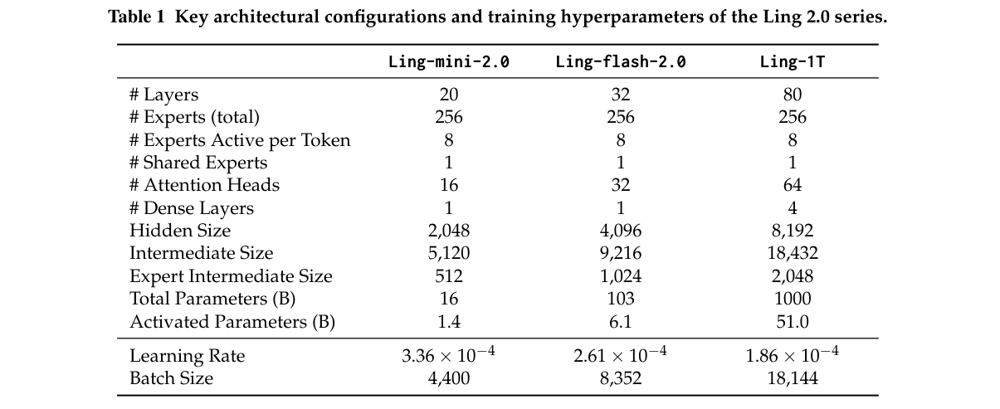
负载均衡策略。基于系统性实验，Ling 2.0 的路由均衡策略采用了与 DeepSeek-V3（DeepSeek-AI, 2024）类似的设计。我们选择无辅助损失的均衡策略，同时鼓励专家专业化和负载均衡，并应用路由器门控缩放提高训练稳定性。缩放因子设为2.5，以稳定门控输出的均方根。我们略微修改偏置更新策略，使偏置保持以零为中心（Liu et al., 2025a）。具体而言，无辅助损失偏置更新为 \(b_i=b_i+u\times[\operatorname{sign}(e_i)-\operatorname{mean}(\operatorname{sign}(e))]\)，其中 \(u\) 为更新率，\(b_i\) 为第 \(i\) 个专家的偏置，\(e_i\) 为该专家的约束违反误差。此外，我们采用不丢弃 token 的路由策略确保模型性能，并结合分组路由提高训练效率，而不造成任何性能退化。
多 token 预测。为增强模型性能与推理效率，Ling 2.0 原生整合 MTP（Gloeckle et al., 2024; DeepSeek-AI, 2024）作为辅助训练目标。通过严格验证其有效性和外推性，我们发现，MTP 在不同模型规模上均能持续改善代码与数学任务表现。考虑 MTP 超参数随模型规模的扩展趋势，以及各种规模下的训练效率，我们为每个规模的模型引入1个 MTP 层，并将 MTP 损失权重设为0.1。为解决 MTP 引入的额外计算开销，我们进行了详细性能分析，并在 Megatron 训练框架中，为 MTP 模块实现细粒度流水线并行（PP）划分。这一优化显著缓解了 MTP 带来的性能开销，确保高训练吞吐量（详见第5节）。
Ling 2.0 系列从构思之初，就以训练万亿参数基础模型为长期目标。为此，我们建立 Ling Scaling Laws（Tian et al., 2025a），指导超参数与架构选择。该框架也为标准化实验流水线奠定基础，确保研究发现可以可靠外推到大100倍以上的计算规模。具体而言，Ling Scaling Laws 发挥两项关键作用：
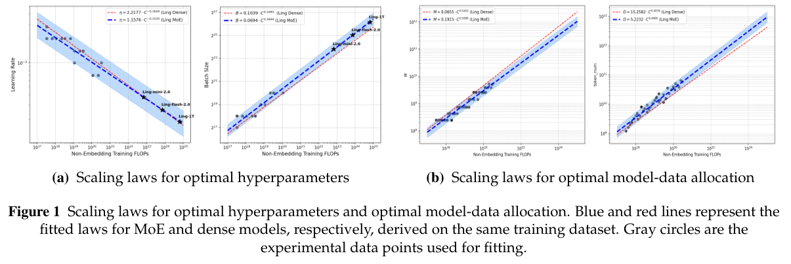
为确保 Ling 2.0 系列能够在适当的超参数下稳定训练，我们首先推导了最优 MoE 超参数的 scaling laws。先前研究（Bi et al., 2024; Ling-Team et al., 2025）表明，最优学习率（\(\eta\)）和 batch size（\(B\)）主要由总计算预算（\(C\)）决定。因此，我们使用 Warmup–Stable–Decay（WSD）调度器（Hu et al., 2024），在最高3e20 FLOPs的计算规模上开展近千次实验，进行超参数搜索。为简化分析，我们最初将 MoE 架构固定为64个专家（激活4个）加1个共享专家。移除 outlier 后，我们选择最优和接近最优1的配置进行拟合。从这些数据中，我们拟合计算量 \(C\) 与最优 batch size \(B_{\mathrm{opt}}\)、学习率 \(\eta_{\mathrm{opt}}\) 之间的幂律关系，并验证所得定律在不同激活率下仍保持接近最优。拟合过程与参数如图1a所示。
我们的分析揭示了 MoE 与稠密模型在超参数选择上的关键差异：在更大的计算规模上，MoE 倾向于使用更大的 batch size 和相对更低的学习率。我们将这一现象归因于 MoE 的稀疏 gradient 更新：由于每个 batch 中只有一部分 token 会对任何给定专家的 gradient 更新作出贡献，因此需要更大的 batch size，以确保稳定、有效的训练。这些经过验证的 scaling laws 提供了可靠基础，使 Ling 2.0 模型能以接近最优的超参数高效训练。
此外，为深入理解 MoE 与稠密模型的不同训练动态，我们分析了不同计算预算（\(C=M\cdot D\)）下，训练数据（\(D\)）与模型参数（\(M\)，即每个 token 的 FLOPs）的最优分配。如图1b所示，我们发现，对于任何给定计算预算，相比最优稠密模型，最优 MoE 模型的参数（\(M_{\mathrm{opt}}\)）更少，却使用更多数据（\(D_{\mathrm{opt}}\)）训练。这一结论表明，MoE 架构拥有更大的有效容量，使其能够以更少参数高效处理更多训练数据；在数据充足但计算资源有限的现实场景中，这带来显著效率优势。
为指导 Ling 2.0 的架构设计，我们系统性地推导了 MoE 架构效率的 scaling laws。我们引入效率杠杆（EL）作为主要指标，将其定义为稠密模型与 MoE 模型达到（接下页）
1“接近最优”定义为在给定计算预算下，损失与最小值的差距在0.25%以内的配置。
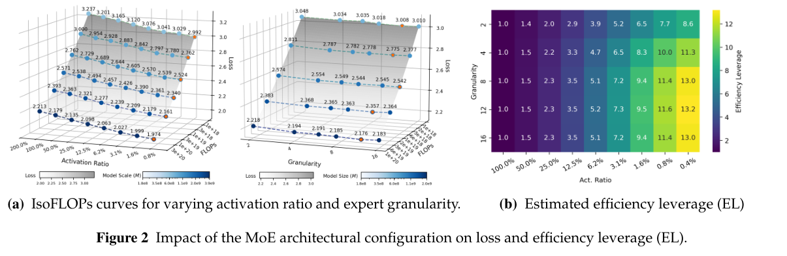
（接上页）
相同性能水平（例如相同验证损失）所需计算成本之比。我们系统性地分析关键架构维度对 EL 的影响，包括专家激活率、专家粒度、共享专家比例等。随后，将经验发现整合为统一 scaling law，把 EL 预测为 MoE 配置的函数，为高效 MoE 设计提供实用框架。这项基于300多个、最大参数量28B模型的大规模实证研究，揭示了支配 MoE 效率的若干核心原则：
综合这些认识，我们推导出统一的 EL scaling law，整合计算预算（\(C\)）、激活率（\(A\)）和专家粒度（\(G\)）的影响：
其中，\(\hat A\) 是激活率 \(A\) 的饱和变换，定义见 Clark et al.（2022）。指数 \(\alpha=a+d\cdot\log C\) 建模依赖计算量的扩展。其中，\(d>0\) 量化更大计算规模对 EL 的放大作用，\(a\) 表示基础扩展指数。参数 \(\beta\) 和 \(\gamma\) 定义专家粒度 \(G\) 的对数多项式调节，捕捉观察到的最优范围。我们使用 Huber 损失与 BFGS 优化（Hoffmann et al., 2022）拟合公式1，并在 Ling-mini-2.0 上通过实验验证这一扩展关系。例如，图2b展示了1e22 FLOPs下预测的 EL 景观，突出最优架构区域。
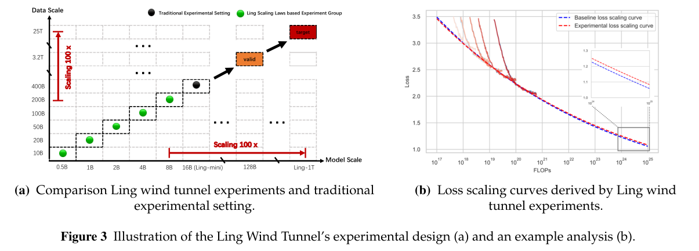
基于这些结果，所有 Ling 2.0 模型均采用高稀疏、细粒度设计：256个路由专家，每个 token 激活8个，再加1个共享专家，总体激活率为3.5%。Ling scaling law 预测，该架构配置具有超过7倍的效率杠杆，我们在 Ling 2.0 系列上通过实证确认了这一点。
Ling Scaling Laws 不仅决定具体训练与架构参数，更重要的是，以长期主义指导 Ling 项目的实验和迭代范式。为以最低成本促进高效创新，我们基于这些 scaling laws 设计了“Ling 风洞实验”系统。
如图3a中的绿色点所示，该系统包含五项实验，模型参数从500M至8B，规模按幂律分布。整个实验过程高度标准化：1）模型架构：每个模型的具体架构与规模，由第2.3.2节的“MoE 架构效率 scaling laws”确定。2）训练资源：每个模型均训练至其最优计算分配对应的 FLOPs 数量。具体训练 token 数由“最优模型与数据分配 scaling laws”（第2.3.1节，图1b）确定。3）训练超参数：核心训练超参数（即学习率与 batch size）根据目标 FLOPs，依据“最优超参数 scaling laws”（第2.3.1节，图1a）设置。我们的实验表明，严格遵循这些关于超参数与数据分配的 scaling laws，可以减少训练不确定性，并将最终训练损失准确预测至0.01误差以内。这使 Ling 风洞系统能够提供自动化、标准化的实验判断，让我们公平评估任何给定特性的规模扩展能力。例如图3b所示，风洞结果清楚展示了不同计算预算下候选特性相对于基线的损失差异，为训练1T基础模型时的决策提供了实证依据。因此，我们使用该系统识别在超大规模下表现良好的设计要素，再将这些发现外推100倍，指导 Ling-1T 的设计。
相比传统消融研究（例如使用400B token 训练单个 Ling-mini-2.0 模型，即图3a中的黑点），Ling 风洞具有更高成本效益。虽然单独运行次数更多，但总计算成本仅为传统方法的35%。更重要的是，它使我们能够精确评估一项技术的规模扩展潜力。（接下页）
（接上页）
从这些多规模观测得出的结论，比从单一实验“切片”得出的结论显著更稳定、可靠。这一方法深刻体现了我们开发万亿规模基础模型的设计理念。
本节分别介绍预训练的两个关键组成部分：数据与训练配方。
在为 Ling 2.0 模型准备预训练数据时，我们主要关注构建高效数据处理基础设施，并整理广泛覆盖高质量通用数据的语料，包括但不限于通用知识、代码、数学、多语言内容等。
原始来源的数据清洗。LLM 从网页、书籍、论文和 Wikipedia 等大型、多样化数据集获得通用知识（Soldaini et al., 2024），但这些数据常存在质量问题。我们为各数据类型建立专门清洗流水线，结合定制的规则与模型。对于网页数据，我们使用 trafilatura 解析器2提取内容，并通过基于采样的检查识别常见低质量模式。有针对性的清洗移除广告、嵌入的 URL、符号过多的文本，并修复 Markdown 与表格解析。HTML/PDF 解析器也持续改进，以提高提取准确率。
新型低质量数据的检测与修复。迭代采样揭示新的低质量数据，我们通过自动化检测与规则生成流水线处理：1）多通道召回：使用分类器、轻量级 LLM 评分与困惑度（PPL）标记可疑样本；2）问题分析：LLM 将问题归类为已有或新规则案例；3）规则生成：LLM 根据问题上下文与质量问题数据库创建清洗规则；4）规则泛化：将相似案例分组，由 LLM 驱动抽象，以拓宽规则适用性。新规则经人工审查后整合，从而加快检测与修复。
高质量过滤与知识文本重写。清洗后，数据集仍然庞大。为改进训练，我们开发高质量过滤流水线。受 FineWeb-Edu（Penedo et al., 2024）启发，我们按数据类型（例如中英文网页、书籍、论文）训练特征模型，评估质量、教育水平、知识密度和领域。迭代实验识别最优子集；例如，我们的英文网页子集比 FineWeb-Edu 大5倍，并在知识基准上优于它。模型难以掌握原始文本中的复杂或罕见知识。我们使用召回—重写方法：（i）按知识密度、STEM领域和问答特征选择候选文本；（ii）应用 Wikipedia 式结构、问答转换和简洁摘要等半合成重写。消融实验显示，MMLU（Hendrycks et al., 2021a）、CMMLU（Li et al., 2024a）和 CEval（Huang et al., 2023）基准上均有一致增益。
我们的目标是赋予 Ling 2.0 强大的通用推理能力，主要包括编程与数学技能。为此，我们从规模、多样性和质量等多个角度优化推理数据。
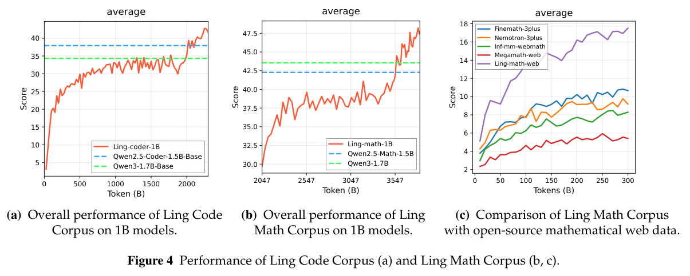
为支持高性能编程导向 LLM 的训练，我们构建了多样化、大规模、按质量分层的 Ling Code Corpus，整合多种数据来源，覆盖源代码、代码相关自然语言数据与合成指令数据。我们的整理流水线既强调编程语言和领域覆盖的广度，也强调质量控制的深度。
我们从 GitHub 仓库收集原始源代码，使用针对各语言语法与惯例定制的多语言细粒度清洗规则，并应用基于 Lint3的语法验证，移除具有编译或结构错误的文件，由此得到覆盖660种编程语言的源代码语料。随后，我们进一步进行：1）根据代码风格/可读性、规范遵循程度与复杂度/难度分层；2）采用代码改写与释义技术，生成额外的高质量增强代码数据。除 GitHub 仓库之外，我们还：1）通过在仓库层面重放事件序列（例如 pull request、issue、merge），从 GHArchive4重建提交数据；2）迭代优化面向代码的 HTML 解析器与清洗算子，从 Common Crawl 和网页中整理代码相关页面、教程与开发者讨论；3）整理大量编程竞赛数据，包括不同平台的题目、用户提交，以及相关用户讨论与评论串。
评估 Ling Code Corpus。我们设计了一种轻量级验证策略，即从零训练小型编程模型（例如1B规模），衡量代码数据的性能。实验表明，在单一类型代码数据上从零训练，可以可靠地代理完整规模性能。这使得在扩展至数百亿或数千亿参数之前，能高效地早期验证架构和训练配方。图4a展示了我们的1B模型（Ling-coder-1B）与 Qwen2.5-Coder-1.5B-Base（Hui et al., 2024）、Qwen3-1.7B-Base（Yang et al., 2025a）的比较结果。结果令人鼓舞：在主流基准上，我们与 Qwen2.5-Coder-1.5B-Base 相当，甚至更好。这仅通过从零消耗2T token 代码数据、再进行300B token 退火阶段实现。更多细节见附录B.1.1。
3https://en.wikipedia.org/wiki/Lint_(software)
4https://www.gharchive.org/
为训练不同规模的 Ling 2.0 模型，我们汇集了来自网页、教科书、研究论文、代码仓库、题库与合成来源的数学语料，并设计了包含解析、召回、过滤、重写与合成的多阶段处理流水线来整理这些语料。
我们迭代改进 PDF 与 HTML 解析器，确保数学内容完整。我们构建 fastText 分类器，从庞大候选池中召回数学数据，再通过微调小型语言模型开发 LLM-Filter 和 LLM-Refiner，过滤并精炼包含数学知识或逐步解题过程的数据。此外，我们采用合成数据生成，创建难度各异、包含逐步推理过程的多样化数学问答对，包括：1）从网页和书籍提取问答对；2）开发精细的问题生成器，生成高质量、真实的数学问题；3）构建大规模数学概念图（Chen et al., 2025），扩展模型的知识边界。
评估 Ling Math Corpus。为通过实证验证数学语料的有效性，我们以第3.1.2.1节介绍的预训练 Ling-coder-1B 模型为基础，仅用数学语料，采用先持续训练后退火的策略训练超过1.8T token，其中最后300B用于退火训练。受篇幅限制，我们只展示各基准的平均性能结果。如图4b所示，所得 Ling-math-1B 在主流数学基准（例如 GSM8K（Cobbe et al., 2021）、MATH（Hendrycks et al., 2021b）、CollegeMath（Tang et al., 2024）、OlympiadBench（He et al., 2024a）、CMATH（Wei et al., 2023）、MathBench（Liu et al., 2024）等）上，表现优于强劲的 Qwen2.5-Math-1.5B-Base（Yang et al., 2024b）与 Qwen3-1.7B-Base（Yang et al., 2025a）。
此外，我们开展专项比较分析，评估整理后的数学网页数据的贡献。使用相同的1B模型训练范式，我们将自有网页数据与一组广受认可的开源数据集比较，即 Infi-mm-math（Han et al., 2024）、finemath-3plus（Allal et al., 2025）、megamath（Zhou et al., 2025）和 nemotron-cc（Mahabadi et al., 2025）。使用我们的网页数据训练的 Ling-math-web-1B 表现显著更好，如图4c所示。这验证了专门设计的网页数据获取与精炼流水线的有效性，而该流水线是预训练数据高质量的关键因素（详见附录B.1.2）。
为增强多语言能力，我们针对性地增加多语言 token，将 tokenizer 词表从 Ling 1.5 的128K扩展至156K。对于多语言语料，我们从开放网页来源与平行语料中整理了约2TB高质量多语言数据。数据经过语言识别、过滤、清洗和去重等严格预处理，确保语言多样性与数据完整性。语料广泛涵盖约30种语言及不同领域，包括网页文本、代码、数学、Wikipedia 和平行句对，支持稳健的跨语言理解。此外，多语言数据占全部预训练数据的4%。通过实验，我们确定了最优分布，能在保持中英文能力的同时显著改善小语种表现。我们发现，罗曼语族和日耳曼语族数据对核心语言的负面影响较小，而某些其他语族的数据则需要更谨慎平衡。更多细节见附录B.2。
为构建长上下文能力，我们在网页、书籍/小说、科学文章、软件文档等异构来源上，实现检索—合成—验证流水线。质量控制包括：
该流水线产生约1.2T高质量长文本 token。
训练大规模语言模型，对数据基础设施的效率、扩展能力与治理提出重大挑战。为解决协作低效、血缘不透明、迭代缓慢等问题，我们基于两个核心原则构建了下一代基础设施：Data-as-Code 与统一数据湖仓。
Data-as-Code：自动化 CI/CD 工作流。我们将整个数据流水线代码化，并通过版本控制（例如 Git）管理，以实现自动、可复现的工作流。这与通过代码驱动编排来标准化工作流的顶尖 ML 平台相一致（Baylor et al., 2017）。我们开发统一 AIDataOps 库，包含跨模态的50多个数据算子，集成于自动化 CI/CD 系统。其优势包括透明、可追踪的端到端数据血缘，以及完全自动化的特性开发，将研发迭代周期从数月缩短至数天。
统一数据湖仓与宽表架构。为克服数百个分散数据集造成的数据孤岛，我们实现统一湖仓（Zaharia et al., 2021），以逻辑宽表聚合网页、代码等主要领域。这一中心枢纽简化数据发现与分析，支持无需重建全表的弹性扩展，并达到每小时超过20TB的I/O吞吐量，消除大规模训练中的数据处理瓶颈。
结合这些原则，我们创建了强大的数据引擎，对于构建 Ling 2.0 语料至关重要。它使我们能构建万亿条记录的网页宽表，并在两天内处理300亿条可训练数据，加速模型开发，也支持未来复杂的数据探索。更多信息见附录B.3。
Ling 2.0 预训练采用多阶段策略，各阶段定制数据混合，并使用 WSM（warmup-stable-merge）调度器（Tian et al., 2025b），以 checkpoint 合并替代学习率衰减，提高灵活性与有效性。接下来详细介绍 Ling 2.0 的训练配方。
模型超参数。基于第2.3.2节对 scaling laws 的深入分析，Ling 2.0 采用高稀疏、细粒度 MoE 架构。每个 MoE 层包含1个共享专家与256个路由专家，每个 token 激活8个专家。为保证稳定性，最初若干层为稠密（接下页）
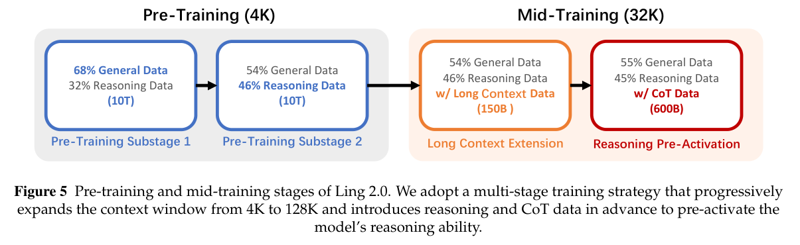
（接上页）
层。所有模型规模的 attention head 维度均固定为128。我们使用深度为1的多 token 预测（MTP）。所有参数均以0.006标准差随机初始化。其他架构参数随模型规模扩展，详见表1。
训练超参数。我们使用 AdamW（Loshchilov and Hutter, 2017），\(\beta_1=0.9\)、\(\beta_2=0.95\)，权重衰减0.1，gradient 范数裁剪阈值1.0。预训练前20T token 使用4K上下文窗口，随后150B token 使用32K上下文。我们将无辅助损失负载均衡项的偏置更新率设为 \(\gamma=0.001\)，MTP 损失权重为0.1。上下文扩展后，其余训练的偏置更新率设为0.0001。依据第2.3.1节 Ling scaling laws，我们确定 Ling 2.0 的学习率与 batch size，汇总于表1。对于 batch size，我们在最初约500B token 期间逐步提升（例如从3024提升到峰值），之后保持不变。对于学习率，我们采用新的 WSM（warmup-stable-merge）调度器：前2000步线性 warmup 至峰值学习率，随后保持恒定直至训练结束；最终“退火”通过 checkpoint 合并而非学习率衰减实现（详见第3.2.3节）。
Ling 2.0 采用多阶段预训练策略，包括：（1）在大规模通用语料上进行通用预训练；（2）在中等规模、面向特定任务的语料上进行中期训练。
在通用预训练阶段，Ling 2.0 消耗海量数据，确保稳健的整体能力。如图5所示，该阶段采用4K上下文长度，包含两个子阶段，每个包含10T token。在这两个渐进子阶段中，我们将推理数据（包括数学和代码）比例从32%提高至46%，相应地将通用数据（例如网页）比例从68%降至54%。同时，提高语料质量，实施更严格的数据去污染。预训练中高比例的推理数据，为激活与增强模型推理能力奠定坚实基础，使 Ling 成为具有内在推理优势的模型。
通用预训练结束后，我们执行中期训练阶段，将上下文长度扩展至128K，并通过引入 chain-of-thought（CoT）数据预激活模型推理能力。
长上下文扩展。在中期训练最初150B token 中，我们采样20%的32K长度长文本序列，保持与上一阶段类似的数据混合。这一过程（接下页）
（接上页）
将模型有效上下文窗口从4K扩展至32K。在此过程中，模型在短上下文基准上的性能保持稳定，而长上下文基准（例如 L-Eval（An et al., 2023）、LongBench（Bai et al., 2023））上的表现持续改善。我们使用 YaRN（Peng et al., 2023）方法，将 Ling 上下文窗口扩展至128K。如图6所示，经过有监督微调后，Ling-mini-2.0 在128K上下文长度的 Needle in a Haystack（NIAH）测试上表现强劲。
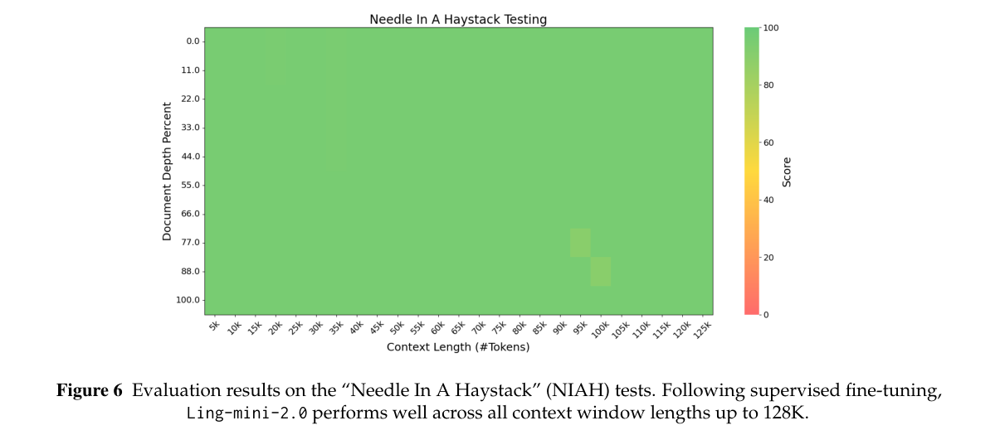
推理能力预激活。在随后600B token 的中期训练中，我们保持高比例推理数据，并引入额外的高质量 chain-of-thought（CoT）语料。以更高学习率在这些高质量数据上继续训练，并通过合并中期训练 checkpoint 实现稳健性能。我们发现，在预训练后期及早引入 CoT 数据，能够有效“预激活”模型推理能力，为推理性能提供更高上限，并为后续微调与强化学习阶段提供更稳定基础。第3.3.2节将进一步证明该策略对增强模型推理能力的有效性。
长期以来，学习率（LR）衰减被视为有效 LLM 中期训练的必要条件，但它限制灵活性并增加调优开销。为实现更加灵活、有效的过程，Ling 2.0 系列采用新的 WSM（warmup-stable-merge）调度器（Tian et al., 2025b），以 checkpoint 合并取代学习率衰减，并取得更优性能。
学习率衰减与 checkpoint 合并的理论联系。我们首先建立 checkpoint 合并与学习率衰减之间的理论等价关系。合并过程通过加权平均，将一系列 checkpoint \([\theta_n,\theta_{n+1},\ldots,\theta_{n+k}]\) 组合为单个模型 \(\hat\theta_{n+k}\)。为便于分析，我们假设 checkpoint 之间的 gradient 更新相互独立。通过将每个 checkpoint \(\theta_{n+j}\) 重新表示为基础 checkpoint \(\theta_n\) 与后续 gradient 更新（\(g\)）的函数，推导表明，合并操作在数学上等价于对基础 checkpoint 之后积累的历史 gradient 重新加权：
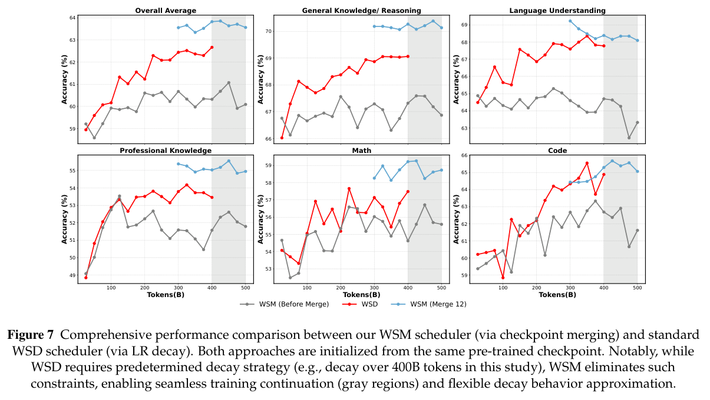
这里，有效 gradient 权重 \(w_i\) 由原始 checkpoint 合并权重 \(c_j\) 决定。这种等价性表明，checkpoint 合并有效模拟了事后的学习率衰减调度，在训练阶段本身不修改学习率的情况下达到退火效果。反过来，这一关系是可逆的。给定目标学习率衰减调度，以所需的单调不增 gradient 衰减系数序列 \(\{w_i\}_{i=1}^{k}\)（其中 \(1\ge w_1\ge w_2\ge\cdots\ge w_k\ge0\)）表示，我们能够唯一确定满足公式2的非负 checkpoint 权重 \(\{c_j\}_{j=0}^{k}\)：
这建立了学习率衰减与 checkpoint 合并之间的双向转换，表明任何学习率衰减调度都可以通过适当的合并策略复现。
整体性能与启发式改进。全面比较显示，提出的 WSM 调度器在大多数评估任务上均持续优于强大的 WSD 基线（Hu et al., 2024）（图7）。具体而言，WSM 在所有基准类别的排行榜分数上平均提高1–2点。关键是，WSM 无需预先选择何时开始学习率衰减，或衰减阶段应持续多久（即衰减数据预算），因此比 WSD 更灵活、更易扩展。此外，它产生的模型能力分布更加均衡。为验证稳健性，我们进一步在相同设置下，对两种调度器的 checkpoint 都进行5个 epoch 的有监督微调，确认 WSM 的优势在后训练之后仍然保留。作为进一步改善稳定性的实用经验法则，我们根据验证性能，选择中期训练最终阶段排名前N的 checkpoint，并平均其参数。最终 Ling 2.0 模型设置 \(N=32\)。
为评估 Ling 2.0 的预训练，我们同时关注最终模型的基准性能和整个预训练过程中的性能动态。
为预训练选择与适配基准。预训练期间，基础模型的指令遵循能力通常有限，可能导致误导性评估。为缓解这一问题，我们提出基准选择与适配框架。具体而言，按以下方面为候选基准评分：（i）训练过程中的稳定性；（ii）与后训练性能的一致性，通过 Kendall 秩相关量化。只有满足两项标准的基准，才保留用于全程监测基础模型。对于不符合标准的基准，我们通过上下文示例、轻量指令提示或填空格式进行适配，以提高稳定性（Luan et al., 2025）。
优化预训练期间的评估方法。除基准设计外，评估过程本身也可能不稳定。我们系统性诊断这种不稳定，将其归因于两个不同来源：训练随机性造成的参数不稳定，以及测量协议噪声造成的评估不稳定。为应对这些问题，我们采用双管齐下的方法（Wang et al., 2025）。首先，通过平均近期 checkpoint 权重进行 checkpoint 合并，缓解参数不稳定，从而平滑模型在参数空间的轨迹。其次，采用 Pass@k 指标应对评估不稳定，因为它能对基础模型真实能力提供更加稳健、低方差的统计估计。大量实验表明，该组合方法产生显著更平滑的性能曲线，为观察训练动态提供更可靠、忠实的视角。
基准与配置。该套件覆盖数学、编程、推理、知识及多语言能力。除另有说明外，我们使用标准化提示与去污染，报告 EM/Acc 或 Pass@1。预训练基础模型的评估数据集包含33个基准，分类如下：
5LiveCodeBench 包含2024年8月至2025年5月发布的454道题目。
我们将 Ling 2.0 基础模型与 Qwen2.5（Yang et al., 2024a）、Qwen3（Yang et al., 2025a）系列基础模型，以及其他领先开源模型比较，包括 Hunyuan-7B（Tencent-Hunyuan, 2024）、Seed-OSS-36B（ByteDance-Seed, 2025）、DeepSeek-V3.1（DeepSeek-AI, 2024）和 Kimi-K2（Moonshot-AI, 2025）。
评估结果。表2、3、4展示 Ling 2.0 基础模型的评估结果。所有模型均通过统一内部评估框架评估，确保比较公平、一致。如第3.2.2.2节介绍，我们特别比较整合与未整合高质量 chain-of-thought（CoT）数据的模型版本，以证明该策略的有效性。主要发现如下：
6MMMLU 的语言覆盖范围可能因基线而异。
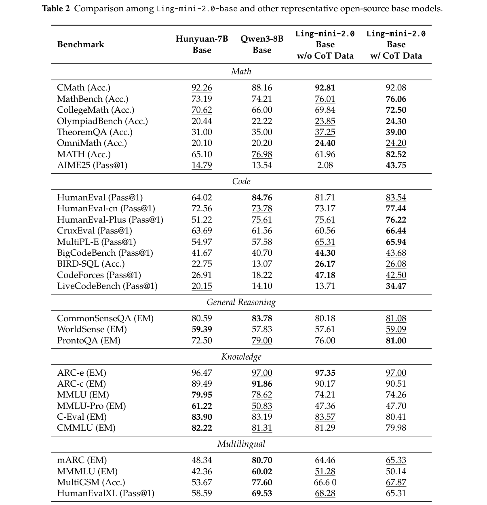
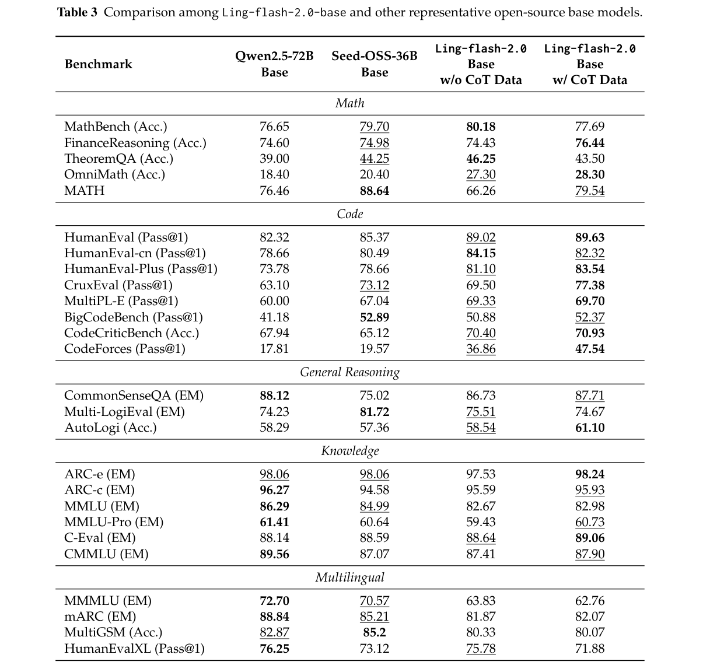
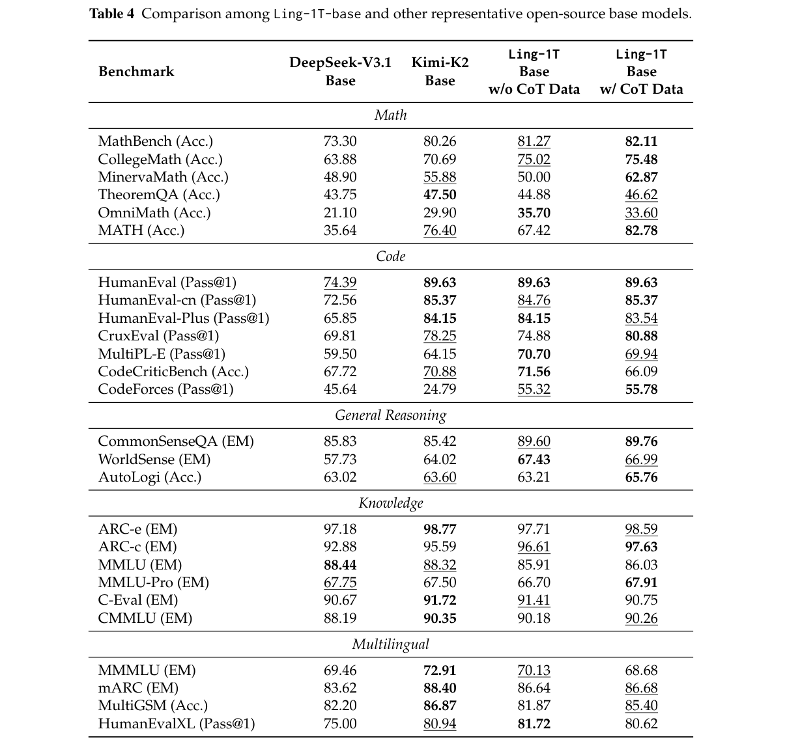
Ling 2.0 的后训练阶段旨在打造强大、通用的基础模型：既能在复杂场景下进行强推理，又能对日常查询保持高效率。如图8所示，该过程采用结构化的三阶段方法，并由可扩展、高吞吐量的奖励计算基础设施支持。
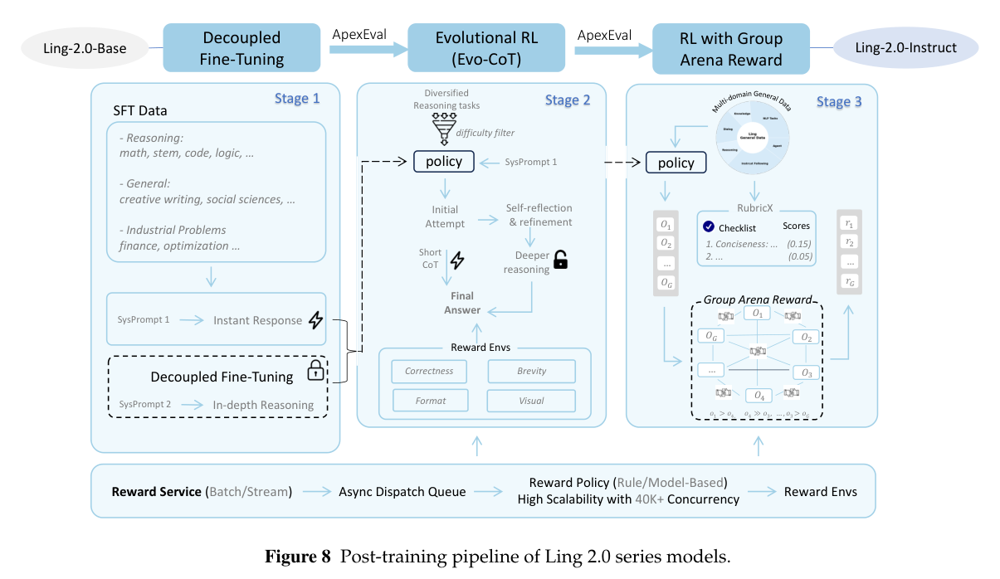
为给强化学习（RL）创建强大起点，我们引入解耦微调（DFT）：一种通过差异化系统提示构建训练数据的有监督方法。如图8阶段1所示，DFT 定义两种模式：即时响应（系统提示1）与深度推理（系统提示2），详见表5。这种提示引导的解耦使模型建立专门的深度推理模式，为后续 RL 进一步增强推理性能提供稳健基础。
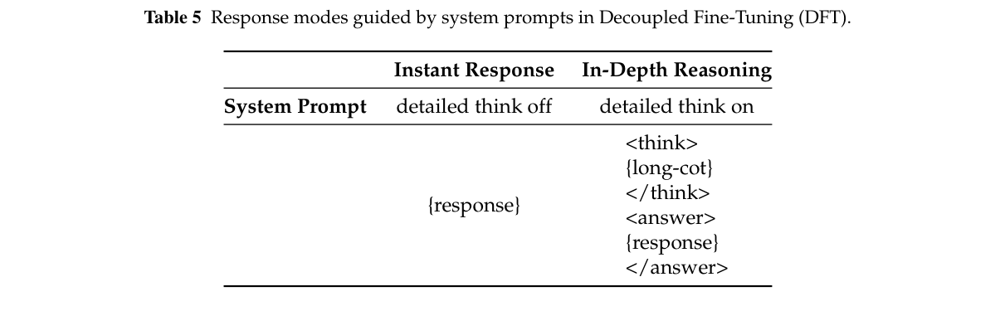
均衡、高质量的 SFT 数据。通过精心组织的 SFT 数据集，将多个任务领域整合在双模式提示框架下，实现均衡的能力分布。数据集组成遵循三个原则：
这种整合设计防止技能失衡，支持抽象推理与实际问题求解之间流畅转换。
面向 RL 潜力的评估。由于 DFT 抑制显式 chain-of-thought，标准准确率指标可能低估其 RL 潜力。因此，我们使用 ApexEval，通过测试问题在最优提示下能否解决来衡量潜在推理能力，强调知识与推理，而非受格式约束的表现。它识别稳定性与可改进性前沿上的 checkpoint，使 RL 从既保留响应性、又最大化推理增益的模型开始（见第4.5节）。
基于 DFT 初始化的策略，我们提出 Evolutionary Chain-of-Thought（Evo-CoT），这一训练范式旨在将自适应推理注入反射级非思考模型，使其能根据问题复杂度扩展推理深度。
形式上，Evo-CoT 从 DFT 初始化的策略 \(\pi\) 开始，使用系统提示 \(s_{\mathrm{instant}}\) 处于即时响应模式，并演进其推理深度。给定用户查询 \(x\)，策略相应生成回答 \(y\sim\pi(\cdot\mid x^{\mathrm{inst}})\)，其中 \(x^{\mathrm{inst}}\) 表示 \((s_{\mathrm{instant}},x)\) 的拼接。在步骤 \(t\)，我们通过以下方式优化参数为 \(\theta\) 的策略 \(\pi\)：
其中，\(R(\cdot)\) 为复合奖励函数，\(\mathcal J(\cdot)\) 表示第4.2.2节详述的 RL 策略更新算法，\(\beta\) 控制相对于基础策略的偏移。奖励包含：
<think>”，奖励为−0.5。总体而言，Evo-CoT 在复杂场景下维持强推理，同时保持通用任务的高效率。
为适应不同领域，我们构建多任务奖励框架，支持广泛任务中的自适应推理。
数学、STEM与逻辑推理。我们的奖励策略遵循一个核心原则：难题多思考，易题快响应。为实现这一原则，我们使用受 Kimi-Team et al.（2025）启发的动态长度控制项 \(R_{\mathrm{length}}\)，对简单任务鼓励简洁，对复杂任务允许详细推理。
形式上，长度偏好函数定义为：
其中，
这里，\(l_k\) 表示针对输入 \(x\) 采样的第 \(k\) 条回答的长度（例如 token 数），\(\ell_{\min}=\min_k l_k\) 与 \(\ell_{\max}=\max_k l_k\) 分别表示样本中最短和最长的回答，\(r_{\mathrm{acc}}\in\{0,1\}\) 表示正确性。
为调节长度偏好相对于正确性的影响，我们引入系数 \(\alpha>0\)。对于容易任务使用较大 \(\alpha\)，强烈促进简洁输出；反之，对于困难任务使用较小 \(\alpha\)，鼓励更充分推理。实际中，最终评分函数为：
该形式确保：
总体上，该设计在输出准确率、清晰度与效率之间取得平衡，同时仍促进挑战性问题上更丰富的推理。
代码推理。代码推理强调功能正确性。针对代码补全、编辑、软件工程与SQL任务，我们采用基于测试用例执行的统一奖励框架，确保可靠的功能验证。
前端生成。针对复杂前端工程任务，我们提出 Visually Augmented Reward（VAR）系统，它是语法—功能—美观三重过滤正反馈循环的核心。如图9所示，VAR 通过无头浏览器，将生成代码渲染为实际界面，再使用多模态模型依据美观和可用性标准评估截图，产生与感知对齐的奖励信号。
我们提出 Linguistic-unit Policy Optimization（LPO，语言单元策略优化），这是一种由 Evolutionary Chain-of-Thought（Evo-CoT）范式驱动的新型策略 gradient 算法。LPO 的核心机制是在句子级进行（接下页）
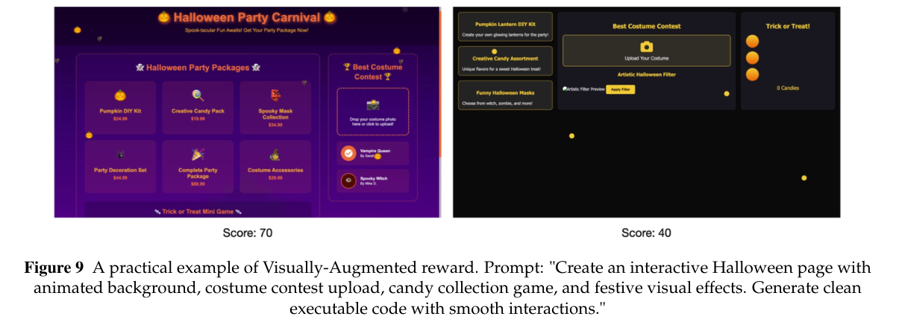
（接上页）
重要性采样和裁剪，将语言学意义上的句子定义为策略更新的基本动作单元。具体而言，令 \(\{y_i\}_{i=1}^{G}\) 表示从旧策略 \(\pi_{\theta_{\mathrm{old}}}(\cdot\mid x^{\mathrm{inst}})\) 采样的一组 \(G\) 条候选回答。对于回答 \(y_i\)，令 \(N_{\mathrm{sent}}(y_i)\) 表示其总句数，\(s_{i,k}\) 为反 tokenizer 后按照常见停顿标点划分得到的第 \(k\) 个句子，\(|\cdot|\) 表示 token 长度。LPO 的目标函数如下：
其中，
LPO 使用以下设计选择进行句子级策略更新：
这一结构使优化步骤与推理的自然语义边界对齐，解决传统 token 级和序列级方法中的粒度不匹配。它在不牺牲数据效率的情况下实现稳定性，使 LPO 自然适合 Evo-CoT 训练范式。
实证上，如图10所示，相比 GRPO（Shao et al., 2024）、GSPO（Zheng et al., 2025）与 GSPO（Token Mean）变体，LPO 带来更平滑的奖励曲线与显著更高的稳定性。它避免平台期与崩溃，收敛更快，泛化更好。在具有挑战性的 AIME 2025 测试集上，LPO 训练模型取得显著更高的准确率，表明（接下页）
（接上页）
在句子级稳定更新，不仅改善优化，还引导策略形成更稳健的推理策略。
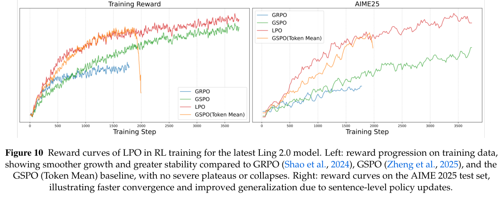
在针对开放式主观任务的 RLHF 后训练阶段，存在两个核心目标：（1）缓解模糊评估标准中固有的奖励噪声；（2）使模型输出更精确地对齐细腻的人类偏好。为此，我们设计了组内比较评估策略 Group Arena Reward（GAR），以及细粒度、多维度奖励指导框架 RubriX（“Rubrics for eXtended domains”，面向扩展领域的评分细则）。二者共同提高主观任务优化的稳定性，使生成既技术准确，又自然地与用户意图对齐。
对于开放式任务，传统奖励机制往往难以量化主观质量，并存在高方差评分问题。如图11所示，GAR 用相对的锦标赛式比较，替代独立绝对评分，以应对这些挑战。同一策略的多条回答进入一个“竞技场”；生成式奖励模型充当裁判，以循环赛方式进行成对比较。各次一对一比赛的累积结果构成每条回答的最终奖励。这种相对排名结构有效降低方差与奖励噪声，为策略更新产生更可靠的优势估计。
为通过精确偏好建模补充 GAR，我们提出 RubriX：针对主观通用任务定制、扩展至不同领域的一组奖励评估细则。RubriX 涵盖清晰度、连贯性、创造力、情感共鸣、指令遵循和领域特定准确性等多个维度，并为写作、翻译、长篇问答、情感对话、多轮对话及其他指令遵循任务提供具体实例。这些结构化细则引导奖励模型捕捉用户意图的细微方面，鼓励回答既在表达流程上更自然，也更加符合复杂偏好标准。
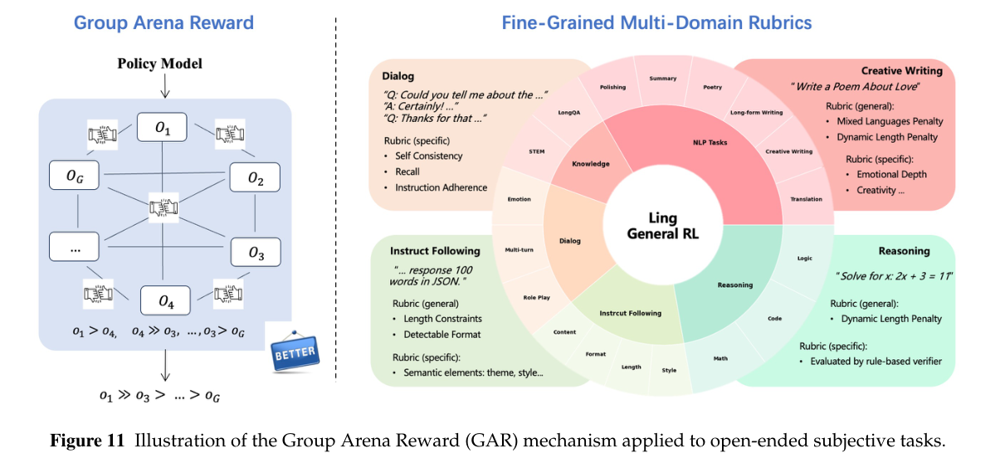
为灵活支持 RL 训练流水线中不同推理任务的奖励计算与奖励策略编排，我们提出统一、可扩展的奖励模型系统。该系统同时支持基于规则、基于模型和基于多种编程语言的奖励验证，可扩展至4万并发异构奖励请求，持续成功率超过99.9%。
系统架构包含三个核心模块：（1）高可用沙箱环境，整合多编程语言沙箱、通用奖励模型推理、视觉奖励评估器，以及复杂环境沙箱（软件工程、数据库操作、浏览器交互等）；（2）抢占式任务调度机制，使用高性能有界队列，缓解峰值并发下因计算异构性导致的超时失败，使系统吞吐量提高39%；（3）异步奖励计算框架，将 RL 训练迭代与奖励计算延迟解耦，实测训练时间最多缩短30%。
后训练中，RL 用于解锁模型推理潜力。为有效初始化 RL，我们必须识别潜力最高的 SFT checkpoint。然而，传统方法存在不足：1）依赖贪心或平均 pass@k 分数，反映的是平均表现，而非最佳潜力；2）checkpoint 缺乏强指令遵循能力，导致对偏离固定格式的正确回答误判。
为解决传统评估方法的上述两个问题，我们提出 ApexEval，获得最适合 RL 训练的 checkpoint 初始化。方法包括：
寻找高潜力 checkpoint。ApexEval 旨在评估模型真实能力及进一步改进的潜力，从而识别有前景的 checkpoint，用于后续指令微调或 RL 优化。在 Ling 2.0 预训练阶段，我们引入一定比例的即时响应与深度推理数据。从后训练角度看，这一引入提高了应用演进式推理强化学习（ERL）时的推理性能上限。
如图12所示，我们比较预训练中加入与不加入 chain-of-thought（CoT）数据的解耦微调（DFT）。性能上限同时用 ApexEval 与高值 pass@k 指标评估。在所有设置下，相同 DFT 配置中，预训练含 CoT 数据始终带来更高上限。我们使用 ApexEval 作为选择推理强化学习初始模型的标准。相比未使用 CoT 数据的模型，使用 CoT 预训练的 DFT 模型在 ERL 第450步展现更强的 AIME 表现，说明其性能提升轨迹更快。
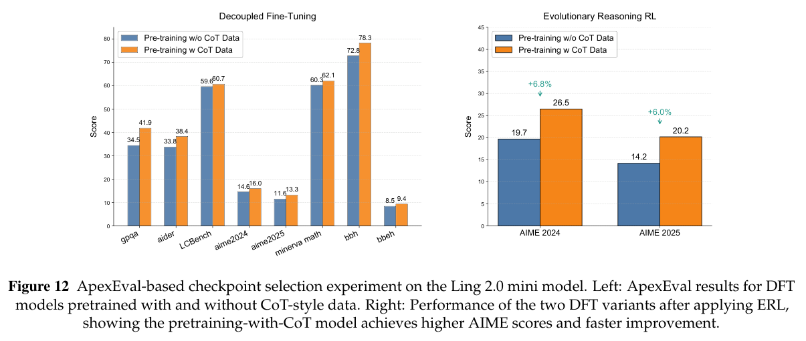
基准与配置。该套件涵盖数学、编程、推理、知识、agent、指令遵循及对齐能力。除另有说明外，我们在0-shot提示与去污染条件下报告 EM/Acc 或 Pass@1。对于填空型基准，使用 LLM-as-a-Judge 提高评估准确性。后训练模型的评估数据集包含36个基准，分类如下：
表6、表7和表8将 Ling-mini-2.0、Ling-flash-2.0 和 Ling-1T 与领先模型全面比较。如表8所示，在大多数基准上，Ling-1T 在编程、数学、推理、对齐与多轮对话等多个领域优于领先模型。Ling-1T 当前结果与 scaling law 高度一致。此外，我们还有以下发现：
推理能力。受益于解耦微调阶段的深度推理，以及 RL 阶段的演进式 CoT 训练，模型推理能力显著提高。具体而言，SFT 中的深度推理使用表5提示，建立专门的深度推理模式，为 RL 提供稳健基础；随后 RL 中的演进式 CoT 则将自适应推理注入反射级非思考模型，使其能根据问题复杂度扩展推理深度。如表6、表7和表8所示，Ling-mini-2.0、Ling-flash-2.0 与 Ling-1T 在各种需要推理能力的基准上超越多数行业领先模型，包括 LiveCodeBench、MBPP Sanitized 和 CodeForces 等编程任务，CNMO 2024、Omni-MATH 与 OptMATH 等数学任务，以及 BBEH、KOR-Bench、ZebraLogic 等推理任务。
更好且更便宜。我们从推理准确率与效率角度分析 Ling-1T 的整体性能。如图13所示，以竞赛级数学基准 AIME 25 为例，Ling-1T 展现了“高效思考、精确推理”的优势。高效思考与精确推理的最优平衡得益于演进式 CoT，它逐步将模型推理能力从浅层激活至深层，同时实现对推理成本的精确控制。我们认为，对于反射式非思考模型，这种从预训练到后训练逐步激活推理能力的方法，可以持续推进推理准确率与平均推理深度的 Pareto 前沿。
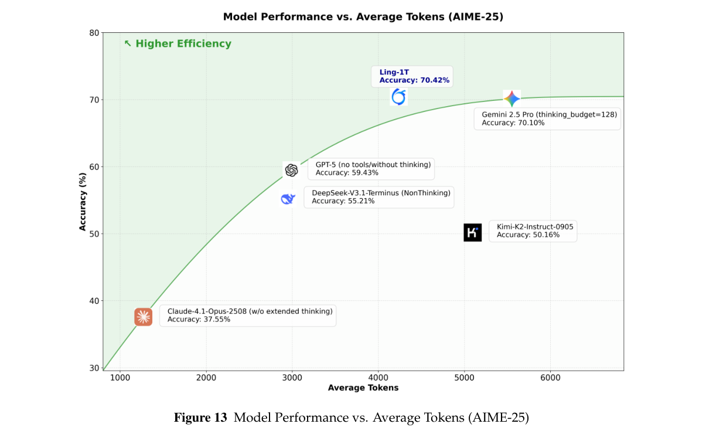
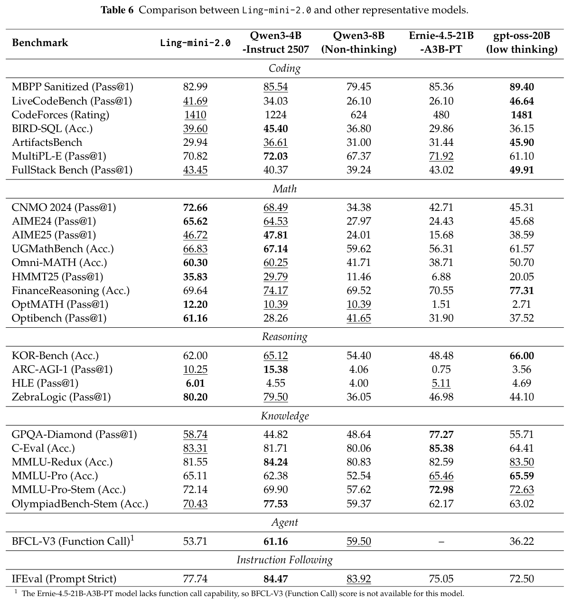
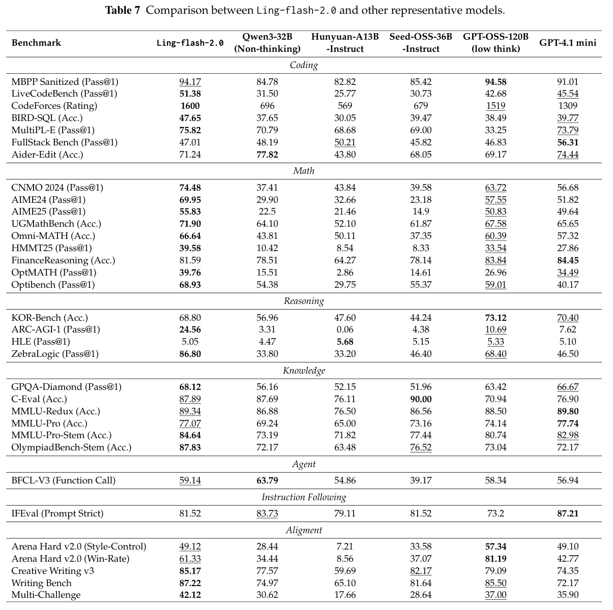
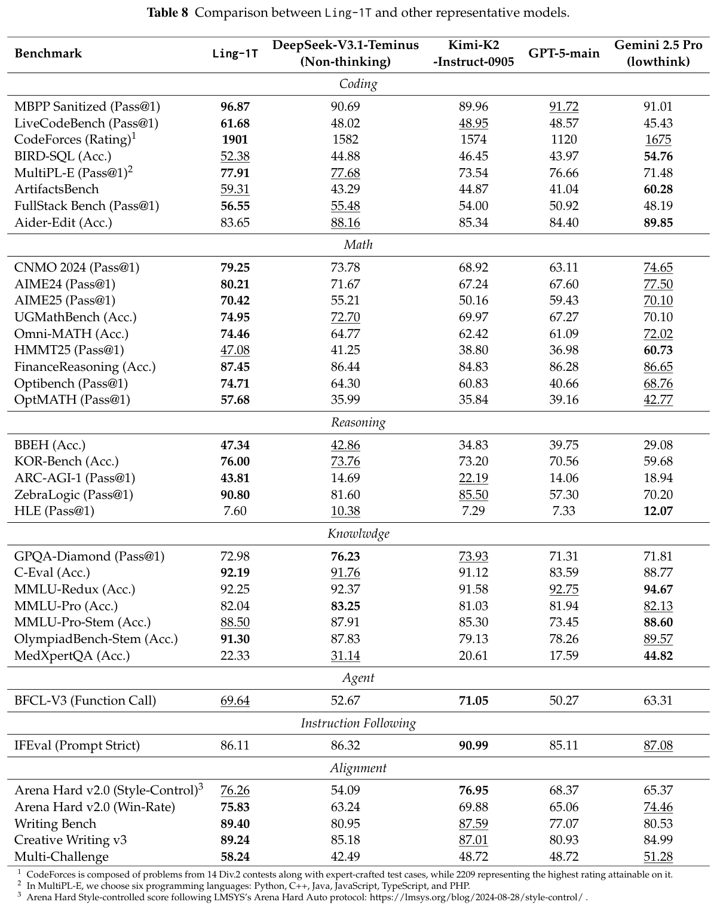
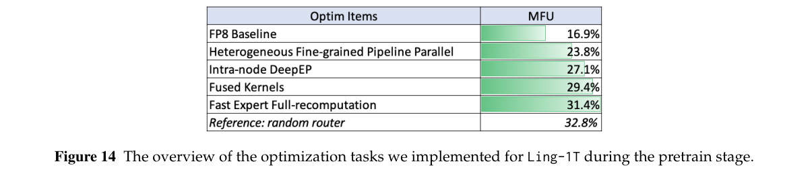
Ling 2.0 模型的算法架构在理论上为低成本扩展提供技术路线图，同时确保训练与推理效率的上限。然而，仅有算法设计不足以实现目标。如果没有任何工程优化，这种高度稀疏的 MoE 架构相比稠密模型并无性能优势。因此，我们需要匹配的基础设施能力，以支持高效训练，并以最低成本将模型扩展至万亿参数级别。尽管 LLM 训练技术稳步进展，构建支持高效万亿参数训练的系统仍面临众多重大挑战：
FP8训练。为降低 Ling 2.0 的训练成本，提高训练与推理效率，所有模型均全程使用 FP8 精度训练（DeepSeek-AI, 2024），这带来精度和稳定性挑战。我们提供先进的 FP8 训练框架，实现近乎无损的模型性能，同时降低计算与内存消耗。
异构 TransformerBlock。MTP block 与 First-K-Dense 策略，使流水线并行（PP）调度单元从同构变为异构，意味着不同 block 的前向、反向计算延迟与内存消耗可能不同；若不精心设计，流水线气泡会显著增加。
更多专家与更高稀疏性。这会导致专家并行（EP）中更高的通信成本，以及更多CPU开销。
更大的整体模型规模。模型规模扩展意味着更大的计算与内存需求，以及更多分布式训练开销。
算法与系统协同设计。模型架构进步要求在模型开发阶段进行有效协同设计，以确保硬件资源利用率最大化。
为应对这些新挑战，我们升级基础设施，帮助 Ling 2.0 模型实现最优训练与推理效率。图14汇总相关优化，具体结果来自 Ling-1T 训练。基线性能在以下配置下测量：修改版 Megatron 0.11、适配 Ling 2.0 且支持 MTP 的 FP8 训练策略，运行于2016张 Hopper GPU。其他关键分布式训练设置包括：TP1、EP8、PP21、VPP2、序列长度4K，以及全量重计算。
Ling 2.0 采用细粒度分块 FP8 量化策略：激活与 gradient 按[1,128]元素块量化，权重按[128,128]元素块量化。在大多数线性层的前向和反向传播中，原始 BF16 张量被量化（接下页）
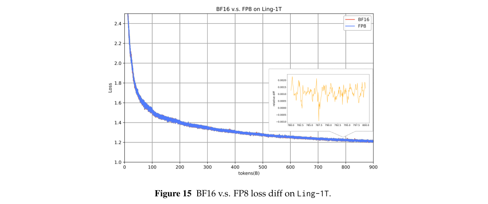
（接上页）
为 FP8 E4M3 格式，并配有 FP32 缩放因子。经过 FP8 GEMM 计算后，得到 BF16 输出。我们的量化策略显著缓解 outlier 对全局量化误差的影响，使 FP8 训练 LLM 成为可行方案。为进一步确保 FP8 训练稳定性，我们使用第2.1节介绍的 QKNorm，防止 outlier 逐层扩散、放大量化误差。同时，FP8 训练保障系统实时跟踪所有层中每个操作的风险系数，极大促进及时异常检测与干预。通过 Ling-1T 模型验证，提出的 FP8 混合精度框架在900B token 训练全过程中保持数值稳定，与 BF16 基线相比，相对损失差异在0.25%以内（平均约0.1%，如图15所示），基准排行榜上没有显著差异。在效率方面，我们通过 Padding Routing Map 等优化降低CPU开销，并通过 FP8 按需权重转置技术以时间换空间，实现更高加速比。最终，FP8训练为 Ling-1T 带来约+15%的 MFU 增益。
FP8 训练保障系统。受益于 FP32 累加操作有效降低 FP8 GEMM 计算精度误差，我们将当前 FP8 训练方案的精度偏差归因于两个主要来源：1）FP8量化下溢，定义为量化后变成零的矩阵元素比例；2）FP8量化失真，以原始矩阵与重建（量化后再反量化）矩阵之间的余弦相似度衡量信息损失。通过高精度重计算进行误差分析，FP8训练保障系统实时监测各层所有操作，并报告健康状态。我们首次将低精度训练安全性量化为可测指标，为 Ling 2.0 训练提供持续保护。
图16展示 Ling-mini-2.0 训练过程中 FP8 下溢与失真指标趋势。在细粒度 FP8 量化方案下，激活与 gradient 均保持健康精度状态，确保前向计算和反向传播中 \(\frac{\partial L}{\partial x}\) 计算的可靠性。然而，监测发现，反向传播中计算 \(\frac{\partial L}{\partial W}\) 的 gradient 转置操作，在尾部层具有较高量化误差。结合高精度重计算指标分析与实验验证，我们得出结论，这些误差（接下页）
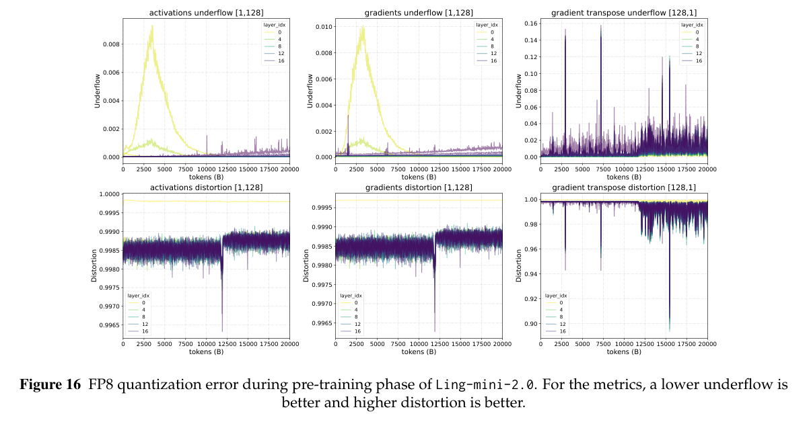
（接上页）
对模型训练的影响可忽略。由于 \(\frac{\partial L}{\partial W}\) 位于反向传播路径的叶节点，其量化误差不会逐层累积。
使用 QKNorm 缓解 outlier 并减少 FP8 精度损失。早期实验中，我们在 attention.linear_qkv 层的激活与 \(\frac{\partial L}{\partial y}\) gradient 中观察到严重 outlier。它们随层深增加而逐渐放大，直接导致该层 FP8 计算中显著的量化精度误差。为此，我们引入 QKNorm，不仅抑制 outlier、增强训练稳定性，还显著降低了网络中全部 FP8 模块的精度误差。
FP8 的计算效率为端到端训练带来直接性能收益。此外，FP8 的内存优势为 micro-batch size（mbs）、并行策略与重计算技术释放更大灵活性，进而提高整体训练吞吐量。为最大化这些收益：
采用上述技术后，Ling-1T 相比 BF16 训练取得+15%的 MFU 提升。在8/16/32张80GB GPU上，启用 MTP 时，Ling-mini-2.0 相比 LLaMA（接下页）
7https://github.com/NVIDIA/Megatron-LM/commit/92d68dae89af0baab2d4eee092f884902dca4db0
8https://github.com/inclusionAI/linghe
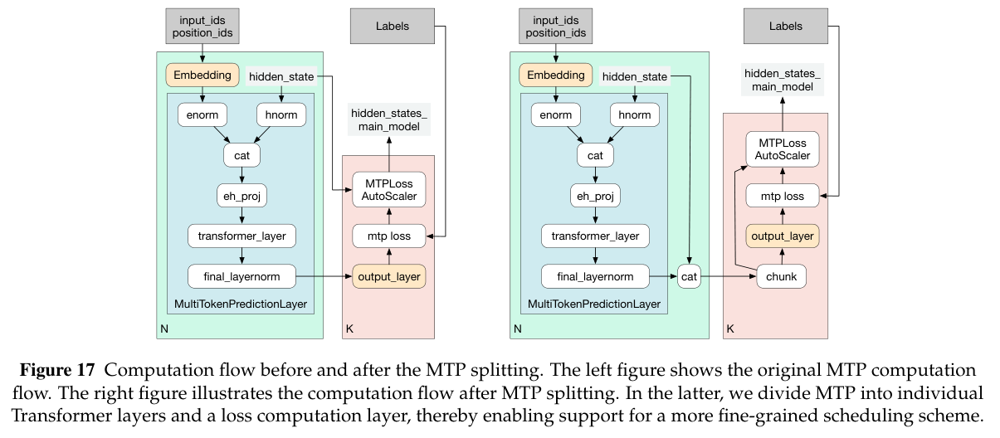
（接上页）
3.1 8B 与 Qwen3 8B，吞吐量提高30–60%；未启用 MTP 时提高90–120%。
FP8 按需权重转置。由于 FP8 张量转置效率低，Transformer Engine 实现会缓存额外的预转置权重矩阵（weight.T），加速反向传播。然而，这一优化未能减少整体内存消耗，因为权重仍以原始形式与转置形式两份 FP8 张量存储。为此，我们引入高性能按需转置算子，消除持久存储转置权重的需求，在不影响计算正确性的前提下，将权重张量内存占用精确减少50%。
FP8 Padding Routing Map。FP8 GEMM 算子要求矩阵维度按16个元素对齐，这与 MoE 架构中每个专家的动态 token 分配天然不兼容。Megatron 实现通过显式填充操作处理这一问题，带来不可忽略的CPU开销。为消除该延迟，我们在专家分配之前策略性地调整 routing map，确保所得张量维度满足算子对齐约束。由于修改完全限于零概率路由区域，严格数学等价性得到保留，从而在不引入计算副作用的情况下提高训练吞吐量。
为降低 PP 气泡率，Shoeybi et al.（2019）提出交错1F1B流水线策略，并进一步支持非均匀层划分等特性。这些增强旨在缓解因 embedding 与损失计算层存在而造成的首尾阶段瓶颈，这些瓶颈常限制整体流水线吞吐量。然而，将该方法用于 Ling 2.0 系列训练时，我们仍面临以下挑战：
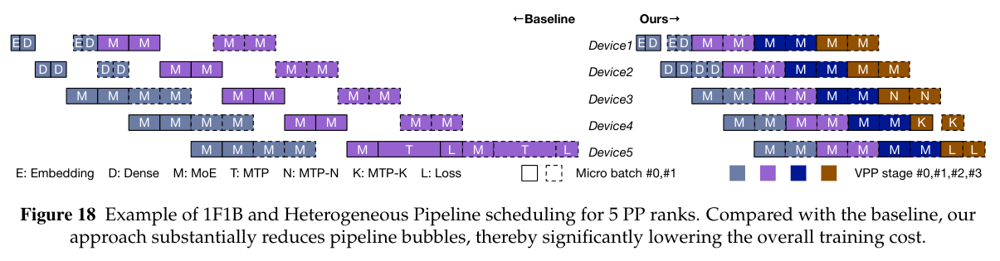
为解决这些问题，我们修改 PP 框架，支持以下新特性：
可配置每个 VPP 阶段的 transformer 层分配：支持灵活配置每个 VPP 阶段的 transformer 层数，包括空阶段。
将 MTP 调度为独立层：MTP 层调度时不再需要与其他 MoE 层分组，或绑定损失计算层。
MTP 部分重计算：反向传播期间，仅重计算 MTP 内部的 transformer 层部分，不重计算 logits 部分，有效以额外内存消耗换取更快计算速度。
MTP 细粒度划分策略：支持将 MTP 内部的 MoE 层与损失计算层分为两个独立层进行调度。图17展示 MTP 拆分前后的计算流程。
图18展示了应用上述优化前后，交错1F1B策略中若干 micro-batch 的部分前向传播差异。为简化展示，图中仅组合前向步骤的选定片段，省略反向步骤。示例模型包含3个稠密层、15个 MoE 层，训练时使用1个 MTP 层，PP大小为5。
Ling 2.0 训练中，我们观察到1个 MTP 层的计算成本约为标准 MoE 层的1.7倍。基于这一观察，我们逐步改进 PP 划分策略，最终实现40%的相对端到端提升。此外，对于路由均衡的 MoE 模型，我们可以将虚拟流水线阶段从 VPP2 增至 VPP4，减少气泡，额外获得5%收益。然而，在其他情况下，若一个 VPP 阶段仅含单个 MoE 层，阶段间阻塞会对 MoE 路由不均衡更敏感，此时我们的策略可能无法带来端到端性能增益。
除了 FP8 训练与异构调度，我们还对分布式训练框架实施细致工程优化，提高 Ling 2.0 训练的性能与稳定性。
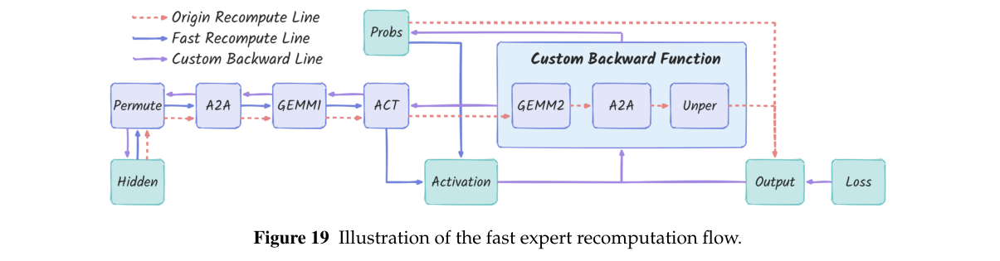
DeepEP（DeepSeek-AI, 2024）旨在优化跨节点 EP 通信性能，减少大量通信开销。在 Ling 2.0 训练中，我们并不涉及跨节点 EP 通信，但将 DeepEP 部署于节点内操作，仍能带来显著性能收益。以 Ling-1T 为例，减少通信冗余带来2%的端到端加速，算子融合则额外贡献13%的端到端性能提升。
Ling 2.0 训练中引入了广泛的融合算子，包括 RoPE Fusion、Router Fusion、升级 GroupGemm（Shoeybi et al., 2019）等。我们观察到，除了通过缓解内存瓶颈提高速度，这些融合算子也有效解决训练中的大量CPU开销，对端到端训练性能带来明显改善。
为支持更大模型，我们使用全量重计算节省GPU内存，以25%的计算成本代价，在固定资源下支持更大规模训练。受益于社区近期若干进展（Shoeybi et al., 2019; Ascend, 2023），我们发现无需额外成本便可将重计算延迟减半的潜力：
近期工作表明，MoE 层中专家概率的加权求和计算，可以前移至激活内部执行。这消除了计算图中 linear_fc2 和 unpermute 操作对早期结果的依赖。如图19所示，不同于标准全量重计算，我们舍弃 linear_fc2 之前的重计算流程。随后，以针对 linear_fc2 与 unpermute 的自定义函数运行反向传播，并将其 gradient 传回激活函数，完成标准反向过程。
Ling 2.0 训练中，小模型的端到端性能增益最高10%，大模型约7%。收益下降可能是因为复杂划分中持续存在流水线瓶颈，部分重计算收益被流水线气泡掩盖。
长上下文训练对 LLM 训练至关重要。除了基本的长上下文训练技术，我们还对 Ling 2.0 训练过程进行全面优化，提高处理长上下文的效率：
结合 MTP 的长上下文训练：我们解决了在对 MTP 应用张量并行（TP）与上下文并行（CP）时，损失与 gradient 不对齐的正确性问题，使 Ling 2.0 能够结合 MTP 进行长序列训练。
支持跨样本 attention mask：长序列训练中，我们发现跨样本 attention mask 机制存在 NaN 问题，主要由 CP 实现引入的全填充问题造成。我们在 FusedAttention 中将 cu_seqlens_padded 设为 cu_seqlens，缓解这些问题。
RoPE Fusion 性能退化：长上下文训练中，每个样本的子序列数不同，会导致 RoPE 性能不稳定。我们通过限制子序列，并根据每个 micro-batch 的实际最大序列长度分配资源，缓解该问题，避免 RoPE 性能退化与波动。
除了 MFU 优化，固定资源下每日 token 吞吐量也取决于有效训练时间占比（ETTR）。我们通过以下框架改进处理这一问题：
优化分布式 checkpoint 存储延迟：保存分布式 checkpoint（DCP）时，GPU Rank0 生成并验证元数据，是耗时瓶颈。由于元数据只依赖模型架构，我们引入元数据缓存，避免冗余计算。对于 Ling-1T，checkpoint 保存时间从269秒降至30秒，占总训练时间比例从2.43%降至0.82%。
启动时间优化：为降低作业启动阶段延迟，我们在训练首次前向传播前构造小规模 batch，让其完整通过一次模型前向与反向传播，使全部 GPU rank 在不存储权重、不更新 gradient 的情况下执行预热计算，将首个训练步骤耗时减少约30%。
最优故障恢复策略：为应对不可恢复训练故障，周期性保存 checkpoint，以便任务重启后加载最新 checkpoint。较短的保存间隔减少故障恢复损失，但保存过程有不可忽略的开销，因此间隔配置至关重要。在 Ling-1T 训练中，我们通过简单策略计算，将 checkpoint 保存间隔配置为48分钟，附录A将讨论这一策略。
Loss spike 处理：Loss spike 可能对训练稳定性与模型性能产生重大负面影响。为缓解这些问题，我们继续使用先前工作（Ling-Team et al., 2025）的方法，从 gradient 和损失两个角度监测训练状态，预防 loss spike 出现。
在 Ling 2.0 训练与分布式框架开发中，框架开发常成为模型训练瓶颈，严重时甚至影响训练结果。与传统软件工程相比，我们发现以下根本原因：
显然，基础 LLM 开发过程成本高、复杂性大。因此，我们提出将软件工程基本原则适配于基础 LLM 开发语境，形成我们称为“基础 LLM 软件工程”的领域。我们认为这是值得深入探索的研究领域，并进一步提出4C（Correct、Consistent、Complete 和 Co-Design，即正确、一致、完整与协同设计）原则，旨在提高基础模型开发效率和交付质量，同时降低相关成本。
基于4C原则，我们在 Ling 2.0 训练期间，对基础 LLM 软件工程的若干关键方面开展初步探索。
LLM 训练周期通常持续数月，在此期间需要持续开发、迭代训练框架，提高训练效率。此外，我们偶尔会扩展框架新功能，以适配算法特征或改善训练稳定性。在整个开发过程中，确保更新后模型训练的一致性和正确性至关重要。然而，某项计划优化一旦部署于大量GPU并行运行的任务上，几乎不可能准确预测其最终影响。
为此，我们建立大语言模型训练框架的迭代升级工作流，构成循环：渐进式估计 → 发布批准 → 任务监测与采样分析 → 经验积累。在模型整个训练周期中，实验在不同资源配置下进行，最多使用约实际训练资源的3%。每轮迭代均验证性能估计结果，只有符合既定标准的迭代才批准发布。为验证正确性，我们开发一套精度对齐与验证工具，应用于开发和测试阶段。最后，通过持续观察和分析新特性，总结相应认识，并用于改进后续迭代。
在 Ling 2.0 开发中，我们采取以下措施，更好地权衡算法性能与系统效率：
感知基础设施的架构设计：以 Norm Head 策略（Ling-Team et al., 2025）为例，我们发现使用该策略带来的性能提升不到1%，（接下页）
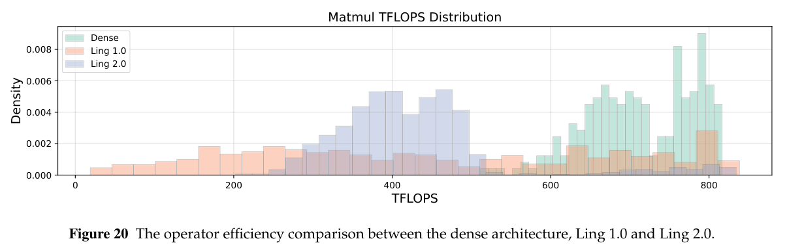
（接上页）
却显著增加单个 PP 阶段的计算与内存消耗。这种巨大开销使分布式训练策略难以调至最优，因此 Ling 2.0 训练未采用该技术。此外，DeepEP 最多将一个 token 发送至4个RDMA节点和8个NVLink节点。为更好利用这一特性，并为未来更大规模 EP 训练作准备，我们在 MoE 层使用 Group Router 算法，将全部专家分为8组，每个 token 只路由至得分最高的4组内，以最大化节点内与跨节点通信效率。
算子效率分析：Ling 2.0 设计期间，我们比较新架构与 Ling 1.0 的算子效率，如图20所示。Ling 2.0 的效率更多集中于中间范围，与其“更宽、更浅”的设计一致。没有算子表现出极低效率，我们认为，这是 First-K-Dense 策略缓解浅层 MoE 不均衡、改善整体计算效率的结果。
结合分布式架构的参数设计：Ling 2.0 参数设计中，我们针对各异构模块进行详细参数配置。例如，设计 Ling-1T 时，将稠密层与 MoE 层的计算消耗比设为1∶2。这有助于所有 PP 阶段实现统一计算时间，从而最大限度减少流水线气泡。
训练过程中，除标准 Hopper 架构外，我们偶尔还需在其他异构GPU上训练。整个过程遵循4C原则，使不同平台的算法逻辑与结果尽可能对齐。
图21展示基于 Ling-flash-2.0 的对齐结果。整个训练过程中，损失差值始终围绕零波动，说明虽然不同GPU架构上的算子实现差异引入浮点精度偏差，但这些误差的均值保持在千分之一以内9。我们认为，这些偏差不足以影响模型训练收敛的准确性，因此确保了 Ling 2.0 系列在异构平台训练的有效性。
9最初1000步的损失曲线上升，是由训练数据切换、且未加载模型优化器状态造成的。
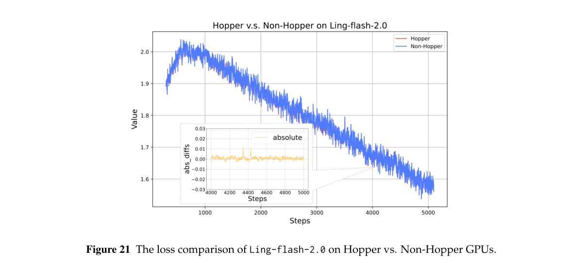
模型评估提供有关模型质量的关键认识，并通过反馈指导算法与工程持续优化。然而，在万亿参数规模下，传统评估方法在稳定性、速度与精度方面面临重大挑战，严重制约 Ling 2.0 开发与训练。为克服这些问题，我们基于 OpenCompass（Contributors, 2023）重新设计整个评估流水线，支持大规模、分布式与增量基准测试。系统现已整合即时 checkpoint 评估、动态资源调度与提示缓存，尽量减少冗余计算。相比原始 OpenCompass，每个 checkpoint 的总评估时间减少超过三分之二。
多节点推理优化。对于无法放入单个GPU节点的大模型，我们扩展 OpenCompass，支持跨 Ray 集群的分布式评估。每个评估任务动态分配多节点、多实例资源，并对接 SGLang（Zheng et al., 2024）推理后端，提供高吞吐量服务。这使我们能在网络与GPU利用率均衡的情况下处理万亿参数模型。
重复前缀的提示缓存。在涉及重复提示的基准设置中（例如相同 few-shot 模板，或选项间共享前缀），为每种变体重新计算对数概率（PPL）十分浪费。我们实现前缀级缓存，跨样本复用共享提示 embedding，将评估吞吐量提高30%以上。
Batch 并行化与异步执行。原始 OpenCompass 串行处理提示预处理、推理与后处理。我们将这些步骤并行化，并引入异步推理调度。小请求自动合并为更大 batch，提高GPU饱和程度，改善整体服务效率与稳定性。
这些优化共同使评估成为训练的持续反馈组成部分，而非独立阶段。通过整合分布式推理、提示复用与异步组 batch，我们显著改善评估速度、资源效率和迭代速度，确保模型 checkpoint 能在数小时而非数天内完成验证。
DualPipe、采用A2A重叠的交错1F1B等大型 MoE 模型研究（DeepSeek-AI, 2024; NVIDIA, 2024），通过修改 PP 调度，使一个 micro-batch 的专家计算与另一个 micro-batch 的A2A通信重叠，提高训练效率。我们在 Ling 2.0 训练中应用这些方法，解决了流式多处理器（SM）计算与通信争用、CPU同步瓶颈等若干性能问题。然而，端到端加速仍然有限。我们分析了修复这些问题后仍未获得显著端到端训练加速的原因，关键因素包括：
总之，基于大规模 EP 的优化，比小配置更容易受到路由不均衡影响。虽然 Ling 2.0 训练中的收益有限，我们仍将计算与通信重叠视为改善大规模 MoE 性能的关键方向，并计划联合优化路由及相关组件，更好实现潜在收益。
结论。Ling 2.0 表明，大规模稀疏语言基础模型可以通过架构、训练与基础设施的协同创新，同时推进推理能力与计算效率。凭借高稀疏 MoE 设计、面向推理的数据流水线、多阶段对齐策略和基于 FP8 的万亿规模基础设施，Ling 2.0 为通用推理模型建立可扩展基础。发布的三个模型——Ling-mini-2.0、Ling-flash-2.0 和 Ling-1T——始终遵循 Ling Scaling Law，共同定义推理准确率与计算成本之间新的 Pareto 前沿，体现“每次激活都能增强能力”原则的有效性。
尽管取得这些进展，Ling 2.0 仍面临若干开放挑战。首先，当前 GQA 架构限制长上下文场景效率；正在进行的工作探索线性和稀疏 attention 设计，进一步提高扩展能力。其次，虽然 Ling 2.0 实现强大的推理精度与效率，有效推理长度与深度仍有增强空间。最后，复杂指令遵循与 agent 行为仍在开发。未来工作将在 Ling 2.0 强大推理基础之上，扩展更通用、自主和交互式的能力。
这些方向共同标志着通用智能扩展的下一步：走向不仅能更高效思考、也能更通用行动的模型。
作者按名字字母顺序排列。
Ling Team Jialong Zhu Qingxiang Huang Ang Li Jian Sha Qingyuan Yang Ben Liu Jianping Wei Quankun Yu Binbin Hu Jiaolong Yang Shaowei Wei Bing Li Jiewei Wu Shijie Lian Bingwei Zeng Jieyue Ma Shoujian Zheng Borui Ye Jingyuan Zhang Shun Song Caizhi Tang Jingyun Tian Shungen Zhang Changxin Tian Jinjing Huang Shuo Zhang Chao Huang Jinquan Sun Siyuan Li Chao Zhang Juanhui Tu Song Liu Chen Qian Jun Liu Ting Guo Chenchen Ju Jun Xu Tong Zhao Chenchen Li Jun Zhou† Wanli Gu Chengfu Tang Junjie Ou Weichang Wu Chilin Fu Junpeng Fang Weiguang Han Chunshao Ren Kaihong Zhang Wenjing Fang Chunwei Wu Kaiqin Hu Wubin Wang Cong Zhang Ke Shi Xiang Shu Cunyin Peng Kun Tang Xiao Shi Dafeng Xu Kunlong Chen Xiaolu Zhang† Daixin Wang Lanyin Mei Xiaoshun Lan Dalong Zhang Lei Liang Xiaqing Sun Dingnan Jin Lei Xu Xin Zhao Dingyuan Zhu Libo Zhang Xingyu Lu Dongke Hu Lin Ju Xiong Xu Fangzheng Zhao Lin Yuan Xudong Wang Feifan Wu Ling Zhong Xudong(Logan) Wang Feng Zhu Lintao Ma Xuemin Yang Gangshan Wang Lu Liu Yajie Yang Hailin Zhao Lu Yu Yang Xiang Haitao Zhang Lun Cai Yanzhe Li Hanxiao Zhang Meiqi Zhu Yi Zhang Hanzi Wang Mengying Li Yilong Wang Hao Qian Min Chen Yingxue Li Haoyi Yu Minghao Xue Yongzhen Guo Heng Zhang Minghong Cai Yuanyuan Wang Hongliang Zhang Mingming Yin Yue Yang Hongzhi Luan Peijie Jiang Yue Yu Huirong Dong Peilong Zhao Yufeng Deng Huizhong Li Pingping Liu Yun Zhang Jia Li Qian Zhao Yunfei Yu Jia Liu Qing Cui Yuqi Zhang
Yuxiao He Zhibo Zhu Ziqi Liu Yuzhuo Fu Zhihao Wang Zitao Xuan Zengke Gui Zhiqiang Zhang† Zuoli Tang Zhaoxin Huan Zhongfang Jia Zhaoyang Wang Zhoufei Wang Zheng Wang Zihang Zeng
†表示通讯作者。
Aider. 终端中的 AI 结对编程, 2025. https://github.com/Aider-AI/aider.
Joshua Ainslie, James Lee-Thorp, Michiel De Jong, Yury Zemlyanskiy, Federico Lebrón, and Sumit Sanghai. GQA：从多 head checkpoint 训练广义 multi-query transformer 模型. arXiv preprint arXiv:2305.13245, 2023.
Loubna Ben Allal, Anton Lozhkov, Elie Bakouch, Gabriel Martín Blázquez, Guilherme Penedo, Lewis Tunstall, Andrés Marafioti, Hynek Kydlíˇcek, Agustín Piqueres Lajarín, Vaibhav Srivastav, Joshua Lochner, Caleb Fahlgren, Xuan-Son Nguyen, Clémentine Fourrier, Ben Burtenshaw, Hugo Larcher, Haojun Zhao, Cyril Zakka, Mathieu Morlon, Colin Raffel, Leandro von Werra, and Thomas Wolf. SmolLM2：小模型走向强大——以数据为中心的小语言模型训练, 2025. https://arxiv.org/abs/2502.02737.
Chenxin An, Shansan Gong, Ming Zhong, Mukai Li, Jun Zhang, Lingpeng Kong, and Xipeng Qiu. L-Eval：建立长上下文语言模型的标准化评估, 2023.
Ascend. MindSpeed LLM, 2023. https://gitee.com/ascend/MindSpeed-LLM/.
Jacob Austin, Augustus Odena, Maxwell I Nye, Maarten Bosma, Henryk Michalewski, David Dohan, Ellen Jiang, Carrie J Cai, Michael Terry, Quoc V Le, et al. 使用大语言模型进行程序合成. corr abs/2108.07732 (2021). arXiv preprint arXiv:2108.07732, 2021.
Yushi Bai, Xin Lv, Jiajie Zhang, Hongchang Lyu, Jiankai Tang, Zhidian Huang, Zhengxiao Du, Xiao Liu, Aohan Zeng, Lei Hou, et al. LongBench：长上下文理解的双语多任务基准. arXiv preprint arXiv:2308.14508, 2023.
Mislav Balunovi´c, Jasper Dekoninck, Ivo Petrov, Nikola Jovanovi´c, and Martin Vechev. MathArena：在无污染数学竞赛上评估 LLM, February 2025. https://matharena.ai/.
Denis Baylor, Eric Breck, Heng-Tze Cheng, Noah Fiedel, Chuan Yu Foo, Zakaria Haque, Salem Haykal, Mustafa Ispir, Vihan Jain, Levent Koc, Chiu Yuen Koo, Lukasz Lew, Clemens Mewald, Akshay Naresh Modi, Neoklis Polyzotis, Sukriti Ramesh, Sudip Roy, Steven Euijong Whang, Martin Wicke, Jarek Wilkiewicz, Xin Zhang, and Martin Zinkevich. TFX：基于 TensorFlow 的生产规模机器学习平台. In Proceedings of the 23rd ACM SIGKDD International Conference on Knowledge Discovery and Data Mining, page 1387–1395. Association for Computing Machinery, 2017. ISBN 9781450348874.
Sumithra Bhakthavatsalam, Daniel Khashabi, Tushar Khot, Bhavana Dalvi Mishra, Kyle Richardson, Ashish Sabharwal, Carissa Schoenick, Oyvind Tafjord, and Peter Clark. 认为你已经解决直接作答式问答了吗？试试 ARC-DA，直接作答式 AI2 推理挑战. CoRR, abs/2102.03315, 2021. https://arxiv.org/abs/2102.03315.
Xiao Bi, Deli Chen, Guanting Chen, Shanhuang Chen, Damai Dai, Chengqi Deng, Honghui Ding, Kai Dong, Qiushi Du, Zhe Fu, et al. DeepSeek LLM：以长期主义扩展开源语言模型. arXiv preprint arXiv:2401.02954, 2024.
ByteDance-Seed. Seed-OSS 开源模型. https://github.com/ByteDance-Seed/seed-oss, 2025.
Federico Cassano, John Gouwar, Daniel Nguyen, Sydney Nguyen, Luna Phipps-Costin, Donald Pinckney, Ming-Ho Yee, Yangtian Zi, Carolyn Jane Anderson, Molly Q Feldman, et al. MultiPL-E：可扩展、可延伸的神经代码生成基准评估方法. arXiv preprint arXiv:2208.08227, 2022.
Federico Cassano, John Gouwar, Daniel Nguyen, Sydney Nguyen, Luna Phipps-Costin, Donald Pinckney, Ming-Ho Yee, Yangtian Zi, Carolyn Jane Anderson, Molly Q. Feldman, Arjun Guha, Michael Greenberg, and Abhinav Jangda. MultiPL-E：可扩展、多语言的神经代码生成基准评估方法. IEEE Trans. Software Eng., 49(7): 3675–3691, 2023. doi: 10.1109/TSE.2023.3267446. https://doi.org/10.1109/TSE.2023.3267446.
Mark Chen, Jerry Tworek, Heewoo Jun, Qiming Yuan, Henrique Pondé de Oliveira Pinto, Jared Kaplan, Harri Edwards, Yuri Burda, Nicholas Joseph, Greg Brockman, Alex Ray, Raul Puri, Gretchen Krueger, Michael Petrov, Heidy Khlaaf, Girish Sastry, Pamela Mishkin, Brooke Chan, Scott Gray, Nick Ryder, Mikhail Pavlov, Alethea Power, Lukasz Kaiser, Mohammad Bavarian, Clemens Winter, Philippe Tillet, Felipe Petroski Such, Dave Cummings, Matthias Plappert, Fotios Chantzis, Elizabeth Barnes, Ariel Herbert-Voss, William Hebgen Guss, Alex Nichol, Alex Paino, Nikolas Tezak, Jie Tang, Igor Babuschkin, Suchir Balaji, Shantanu Jain, William Saunders, Christopher Hesse, Andrew N. Carr, Jan Leike, Joshua Achiam, Vedant Misra, Evan Morikawa, Alec Radford, Matthew Knight, Miles Brundage, Mira Murati, Katie Mayer, Peter Welinder, Bob McGrew, Dario Amodei, Sam McCandlish, Ilya Sutskever, and Wojciech Zaremba. 评估使用代码训练的大语言模型. CoRR, abs/2107.03374, 2021. https://arxiv.org/abs/2107.03374.
Sirui Chen, Changxin Tian, Binbin Hu, Kunlong Chen, Ziqi Liu, Zhiqiang Zhang, and Jun Zhou. 大语言模型数学推理数据合成的方向：多样性、复杂性与正确性. arXiv preprint arXiv:2508.18824, 2025.
Wenhu Chen, Ming Yin, Max Ku, Pan Lu, Yixin Wan, Xueguang Ma, Jianyu Xu, Xinyi Wang, and Tony Xia. TheoremQA：定理驱动的问答数据集. In Houda Bouamor, Juan Pino, and Kalika Bali, editors, Proceedings of the 2023 Conference on Empirical Methods in Natural Language Processing, EMNLP 2023, Singapore, December 6-10, 2023, pages 7889–7901. Association for Computational Linguistics, 2023. doi: 10.18653/V1/2023.EMNLP-MAIN.489. https://doi.org/10.18653/v1/2023.emnlp-main.489.
Yao Cheng, Jianfeng Chen, Jie Chen, Li Chen, Liyu Chen, Wentao Chen, Zhengyu Chen, Shijie Geng, Aoyan Li, Bo Li, et al. FullStack Bench：评估 LLM 作为全栈程序员的能力. arXiv preprint arXiv:2412.00535, 2024.
François Chollet. 面向通用人工智能的抽象与推理语料（ARC-AGI）, 2019. https://github.com/fchollet/ARC-AGI.
Aidan Clark, Diego de Las Casas, Aurelia Guy, Arthur Mensch, Michela Paganini, Jordan Hoffmann, Bogdan Damoc, Blake Hechtman, Trevor Cai, Sebastian Borgeaud, et al. 路由语言模型的统一 scaling laws. In International conference on machine learning, pages 4057–4086. PMLR, 2022.
Karl Cobbe, Vineet Kosaraju, Mohammad Bavarian, Mark Chen, Heewoo Jun, Lukasz Kaiser, Matthias Plappert, Jerry Tworek, Jacob Hilton, Reiichiro Nakano, Christopher Hesse, and John Schulman. 训练验证器以解决数学文字题. CoRR, abs/2110.14168, 2021. https://arxiv.org/abs/2110.14168.
Gheorghe Comanici, Eric Bieber, Mike Schaekermann, Ice Pasupat, Noveen Sachdeva, Inderjit Dhillon, Marcel Blistein, Ori Ram, Dan Zhang, Evan Rosen, et al. Gemini 2.5：通过高级推理、多模态、长上下文与下一代 agent 能力推进前沿. arXiv preprint arXiv:2507.06261, 2025.
OpenCompass Contributors. OpenCompass：基础模型通用评估平台. https://github.com/open-compass/opencompass, 2023.
Viet Dac Lai, Chien Van Nguyen, Nghia Trung Ngo, Thuat Nguyen, Franck Dernoncourt, Ryan A Rossi, and Thien Huu Nguyen. Okapi：通过人类反馈强化学习进行指令微调的多语言大模型. arXiv e-prints, pages arXiv–2307, 2023.
DeepSeek-AI. DeepSeek-V3 技术报告, 2024. https://arxiv.org/abs/2412.19437.
Kaustubh Deshpande, Ved Sirdeshmukh, Johannes Baptist Mols, Lifeng Jin, Ed-Yeremai Hernandez-Cardona, Dean Lee, Jeremy Kritz, Willow E. Primack, Summer Yue, and Chen Xing. MultiChallenge：对前沿 LLM 构成挑战的真实多轮对话评估基准. In Wanxiang Che, Joyce Nabende, Ekaterina Shutova, and Mohammad Taher Pilehvar, editors, Findings of the Association for Computational Linguistics: ACL 2025, pages 18632– 18702, Vienna, Austria, July 2025. Association for Computational Linguistics. ISBN 979-8-89176-256-5. doi: 10.18653/ v1/2025.findings-acl.958. https://aclanthology.org/2025.findings-acl.958/.
Andreas Eisele and Yu Chen. MultiUN：来自联合国文件的多语言语料库. In Proceedings of the Seventh International Conference on Language Resources and Evaluation (LREC’10), Valletta, Malta, May 2010. European Language Resources Association (ELRA). http://www.lrec-conf.org/proceedings/lrec2010/pdf/686_Paper.pdf.
Bofei Gao, Feifan Song, Zhe Yang, Zefan Cai, Yibo Miao, Qingxiu Dong, Lei Li, Chenghao Ma, Liang Chen, Runxin Xu, Zhengyang Tang, Benyou Wang, Daoguang Zan, Shanghaoran Quan, Ge Zhang, Lei Sha, Yichang Zhang, Xuancheng Ren, Tianyu Liu, and Baobao Chang. Omni-MATH：面向大语言模型的通用奥林匹克级数学基准. In The Thirteenth International Conference on Learning Representations, ICLR 2025, Singapore, April 24-28, 2025. OpenReview.net, 2025. https://openreview.net/forum?id=yaqPf0KAlN.
Fabian Gloeckle, Badr Youbi Idrissi, Baptiste Rozière, David Lopez-Paz, and Gabriel Synnaeve. 通过多 token 预测实现更好、更快的大语言模型. arXiv preprint arXiv:2404.19737, 2024.
Alex Gu, Baptiste Rozière, Hugh James Leather, Armando Solar-Lezama, Gabriel Synnaeve, and Sida Wang. CruxEval：代码推理、理解与执行基准. In Forty-first International Conference on Machine Learning, ICML 2024, Vienna, Austria, July 21-27, 2024. OpenReview.net, 2024. https://openreview.net/forum?id=Ffpg52swvg.
Xiaotian Han, Yiren Jian, Xuefeng Hu, Haogeng Liu, Yiqi Wang, Qihang Fan, Yuang Ai, Huaibo Huang, Ran He, Zhenheng Yang, and Quanzeng You. InfiMM-WebMath-40B：推进多模态预训练以增强数学推理, 2024. https://arxiv.org/abs/2409.12568.
Chaoqun He, Renjie Luo, Yuzhuo Bai, Shengding Hu, Zhen Leng Thai, Junhao Shen, Jinyi Hu, Xu Han, Yujie Huang, Yuxiang Zhang, Jie Liu, Lei Qi, Zhiyuan Liu, and Maosong Sun. OlympiadBench：通过奥林匹克级双语多模态科学问题推动 AGI 的挑战性基准. In Lun-Wei Ku, Andre Martins, and
Vivek Srikumar, editors, Proceedings of the 62nd Annual Meeting of the Association for Computational Linguistics (Volume 1: Long Papers), ACL 2024, Bangkok, Thailand, August 11-16, 2024, pages 3828–3850. Association for Computational Linguistics, 2024a. doi: 10.18653/V1/2024.ACL-LONG.211. https://doi.org/10.18653/v1/2024.acl-long.211.
Chaoqun He, Renjie Luo, Yuzhuo Bai, Shengding Hu, Zhen Leng Thai, Junhao Shen, Jinyi Hu, Xu Han, Yujie Huang, Yuxiang Zhang, et al. OlympiadBench：通过奥林匹克级双语多模态科学问题推动 AGI 的挑战性基准. CoRR, 2024b.
Conghui He, Zhenjiang Jin, Chao Xu, Jiantao Qiu, Bin Wang, Wei Li, Hang Yan, Jiaqi Wang, and Dahua Lin. 万卷：推进中英文大模型的综合多模态数据集. arXiv preprint arXiv:2308.10755, 2023.
Dan Hendrycks, Collin Burns, Steven Basart, Andy Zou, Mantas Mazeika, Dawn Song, and Jacob Steinhardt. 衡量大规模多任务语言理解. In 9th International Conference on Learning Representations, ICLR 2021, Virtual Event, Austria, May 3-7, 2021. OpenReview.net, 2021a. https://openreview.net/forum?id=d7KBjmI3GmQ.
Dan Hendrycks, Collin Burns, Saurav Kadavath, Akul Arora, Steven Basart, Eric Tang, Dawn Song, and Jacob Steinhardt. 使用 MATH 数据集衡量数学问题求解能力. In Joaquin Vanschoren and Sai-Kit Yeung, editors, Proceedings of the Neural Information Processing Systems Track on Datasets and Benchmarks 1, NeurIPS Datasets and Benchmarks 2021, December 2021, virtual, 2021b. https://datasets-benchmarks-proceedings.neurips.cc/paper/2021/hash/be83ab3ecd0db773eb2dc1b0a17836a1-Abstract-round2.html.
Alex Henry, Prudhvi Raj Dachapally, Shubham Pawar, and Yuxuan Chen. Transformer 的 query-key 归一化. arXiv preprint arXiv:2010.04245, 2020.
Jordan Hoffmann, Sebastian Borgeaud, Arthur Mensch, Elena Buchatskaya, Trevor Cai, Eliza Rutherford, Diego de Las Casas, Lisa Anne Hendricks, Johannes Welbl, Aidan Clark, et al. 训练计算最优的大语言模型. arXiv preprint arXiv:2203.15556, 2022.
Jack Hong, Shilin Yan, Jiayin Cai, Xiaolong Jiang, Yao Hu, and Weidi Xie. WorldSense：评估多模态 LLM 的真实世界全模态理解. CoRR, abs/2502.04326, 2025. doi: 10.48550/ARXIV.2502.04326. https://doi.org/10.48550/arXiv.2502.04326.
Shengding Hu, Yuge Tu, Xu Han, Chaoqun He, Ganqu Cui, Xiang Long, Zhi Zheng, Yewei Fang, Yuxiang Huang, Weilin Zhao, et al. MiniCPM：通过可扩展训练策略揭示小语言模型潜力. arXiv preprint arXiv:2404.06395, 2024.
Yuzhen Huang, Yuzhuo Bai, Zhihao Zhu, Junlei Zhang, Jinghan Zhang, Tangjun Su, Junteng Liu, Chuancheng Lv, Yikai Zhang, Jiayi Lei, Yao Fu, Maosong Sun, and Junxian He. C-Eval：基础模型的多层次、多学科中文评估套件. In Alice Oh, Tristan Naumann, Amir Globerson, Kate Saenko, Moritz Hardt, and Sergey Levine, editors, Advances in Neural Information Processing Systems 36: Annual Conference on Neural Information Processing Systems 2023, NeurIPS 2023, New Orleans, LA, USA, December 10 - 16, 2023, 2023. http://papers.nips.cc/paper_files/paper/2023/hash/c6ec1844bec96d6d32ae95ae694e23d8-Abstract-Datasets_and_Benchmarks.html.
Binyuan Hui, Jian Yang, Zeyu Cui, Jiaxi Yang, Dayiheng Liu, Lei Zhang, Tianyu Liu, Jiajun Zhang, Bowen Yu, Kai Dang, et al. Qwen2.5-Coder 技术报告. arXiv preprint arXiv:2409.12186, 2024.
Naman Jain, King Han, Alex Gu, Wen-Ding Li, Fanjia Yan, Tianjun Zhang, Sida Wang, Armando Solar-Lezama, Koushik Sen, and Ion Stoica. LiveCodeBench：面向代码大语言模型的全面无污染评估. In The Thirteenth International Conference on Learning Representations, ICLR 2025, Singapore, April 24-28, 2025. OpenReview.net, 2025. https://openreview.net/forum?id=chfJJYC3iL.
Mehran Kazemi, Bahare Fatemi, Hritik Bansal, John Palowitch, Chrysovalantis Anastasiou, Sanket Vaibhav Mehta, Lalit K Jain, Virginia Aglietti, Disha Jindal, Peter Chen, et al. BIG-Bench 超高难度版. arXiv preprint arXiv:2502.19187, 2025.
Kimi-Team, Angang Du, Bofei Gao, Bowei Xing, Changjiu Jiang, Cheng Chen, Cheng Li, Chenjun Xiao, Chenzhuang Du, Chonghua Liao, et al. Kimi k1.5：扩展 LLM 强化学习. arXiv preprint arXiv:2501.12599, 2025.
Aitor Lewkowycz, Anders Andreassen, David Dohan, Ethan Dyer, Henryk Michalewski, Vinay Ramasesh, Ambrose Slone, Cem Anil, Imanol Schlag, Theo Gutman-Solo, et al. 使用语言模型解决定量推理问题. Advances in neural information processing systems, 35:3843–3857, 2022.
Haonan Li, Yixuan Zhang, Fajri Koto, Yifei Yang, Hai Zhao, Yeyun Gong, Nan Duan, and Timothy Baldwin. CMMLU：衡量中文大规模多任务语言理解. In Lun-Wei Ku, Andre Martins, and Vivek
Srikumar, editors, Findings of the Association for Computational Linguistics, ACL 2024, Bangkok, Thailand and virtual meeting, August 11-16, 2024, pages 11260–11285. Association for Computational Linguistics, 2024a. doi: 10.18653/V1/2024.FINDINGS-ACL.671. https://doi.org/10.18653/v1/2024.findings-acl.671.
Jinyang Li, Binyuan Hui, Ge Qu, Jiaxi Yang, Binhua Li, Bowen Li, Bailin Wang, Bowen Qin, Ruiying Geng, Nan Huo, Xuanhe Zhou, Chenhao Ma, Guoliang Li, Kevin Chen-Chuan Chang, Fei Huang, Reynold Cheng, and Yongbin Li. LLM 已经能够充当数据库接口了吗？面向大规模数据库依据型 text-to-SQL 的大型基准. In Alice Oh, Tristan Naumann, Amir Globerson, Kate Saenko, Moritz Hardt, and Sergey Levine, editors, Advances in Neural Information Processing Systems 36: Annual Conference on Neural Information Processing Systems 2023, NeurIPS 2023, New Orleans, LA, USA, December 10 - 16, 2023, 2023a. http://papers.nips.cc/paper_files/paper/2023/hash/83fc8fab1710363050bbd1d4b8cc0021-Abstract-Datasets_and_Benchmarks.html.
Jinyang Li, Binyuan Hui, Ge Qu, Jiaxi Yang, Binhua Li, Bowen Li, Bailin Wang, Bowen Qin, Ruiying Geng, Nan Huo, et al. LLM 已经能够充当数据库接口了吗？面向大规模数据库依据型 text-to-SQL 的大型基准. Advances in Neural Information Processing Systems, 36:42330–42357, 2023b.
Tianle Li, Wei-Lin Chiang, Evan Frick, Lisa Dunlap, Tianhao Wu, Banghua Zhu, Joseph E Gonzalez, and Ion Stoica. 从众包数据到高质量基准：Arena-Hard 与 BenchBuilder 流水线. arXiv preprint arXiv:2406.11939, 2024b.
Tianle Li*, Wei-Lin Chiang*, Evan Frick, Lisa Dunlap, Banghua Zhu, Joseph E. Gonzalez, and Ion Stoica. 从实时数据到高质量基准：Arena-Hard 流水线, April 2024. https://lmsys.org/blog/2024-04-19-arena-hard/.
Bill Yuchen Lin, Ronan Le Bras, Kyle Richardson, Ashish Sabharwal, Radha Poovendran, Peter Clark, and Yejin Choi. ZebraLogic：论 LLM 逻辑推理的规模扩展极限. In Forty-second International Conference on Machine Learning, 2025. https://openreview.net/forum?id=sTAJ9QyA6l.
Ling-Team. 每一步都在演进：为万亿规模思考模型扩展强化学习, 2025. https://arxiv.org/abs/2510.18855.
Ling-Team, Binwei Zeng, Chao Huang, Chao Zhang, Changxin Tian, Cong Chen, Dingnan Jin, Feng Yu, Feng Zhu, Feng Yuan, et al. 每次 FLOP 都重要：无需高端 GPU 扩展300B混合专家 Ling LLM. arXiv preprint arXiv:2503.05139, 2025.
Hongwei Liu, Zilong Zheng, Yuxuan Qiao, Haodong Duan, Zhiwei Fei, Fengzhe Zhou, Wenwei Zhang, Songyang Zhang, Dahua Lin, and Kai Chen. MathBench：通过分层数学基准评估 LLM 的理论与应用熟练度. In Lun-Wei Ku, Andre Martins, and Vivek Srikumar, editors, Findings of the Association for Computational Linguistics, ACL 2024, Bangkok, Thailand and virtual meeting, August 11-16, 2024, pages 6884–6915. Association for Computational Linguistics, 2024. doi: 10.18653/V1/2024.FINDINGS-ACL.411. https://doi.org/10.18653/v1/2024.findings-acl.411.
Jiawei Liu, Chunqiu Steven Xia, Yuyao Wang, and Lingming Zhang. ChatGPT 生成的代码真的正确吗？严格评估大语言模型的代码生成. In Alice Oh, Tristan Naumann, Amir Globerson, Kate Saenko, Moritz Hardt, and Sergey Levine, editors, Advances in Neural Information Processing Systems 36: Annual Conference on Neural Information Processing Systems 2023, NeurIPS 2023, New Orleans, LA, USA, December 10 - 16, 2023, 2023. http://papers.nips.cc/paper_files/paper/2023/hash/43e9d647ccd3e4b7b5baab53f0368686-Abstract-Conference.html.
Jingyuan Liu, Jianlin Su, Xingcheng Yao, Zhejun Jiang, Guokun Lai, Yulun Du, Yidao Qin, Weixin Xu, Enzhe Lu, Junjie Yan, et al. Muon 能够扩展用于 LLM 训练. arXiv preprint arXiv:2502.16982, 2025a.
Junnan Liu, Hongwei Liu, Linchen Xiao, Ziyi Wang, Kuikun Liu, Songyang Gao, Wenwei Zhang, Songyang Zhang, and Kai Chen. 你的 LLM 能够稳定推理吗？ pages 17594–17632, Vienna, Austria, 2025b. Association for Computational Linguistics. https://aclanthology.org/2025.findings-acl.905/.
Ilya Loshchilov and Frank Hutter. 解耦权重衰减正则化. arXiv preprint arXiv:1711.05101, 2017.
Hongliang Lu, Zhonglin Xie, Yaoyu Wu, Can Ren, Yuxuan Chen, and Zaiwen Wen. OptMATH：面向优化建模的可扩展双向数据合成框架. In Forty-second International Conference on Machine Learning, 2025. https://openreview.net/forum?id=9P5e6iE4WK.
Hongzhi Luan, Changxin Tian, Zhaoxin Huan, Xiaolu Zhang, Kunlong Chen, Zhiqiang Zhang, and Jun Zhou. BOSE：为基础模型优化的系统性评估方法. arXiv preprint arXiv:2503.00812, 2025.
Kaijing Ma, Xeron Du, Yunran Wang, Haoran Zhang, Zhoufutu Wen, Xingwei Qu, Jian Yang, Jiaheng Liu, Minghao Liu, Xiang Yue, Wenhao Huang, and Ge Zhang. KOR-Bench：在知识正交
推理任务上对语言模型进行基准评估. In The Thirteenth International Conference on Learning Representations, ICLR 2025, Singapore, April 24-28, 2025. OpenReview.net, 2025. https://openreview.net/forum?id=SVRRQ8goQo.
MAA. 美国数学邀请赛2024, 2024. https://artofproblemsolving.com/wiki/index.php/American_Invitational_Mathematics_Examination?srsltid=AfmBOoqiDCiaGTLQrsRTKsZui8RFnjOZqM4qIqY3yGB3sBaqOaxwf_Xt.
MAA. 美国数学邀请赛2025, 2025. https://artofproblemsolving.com/wiki/index.php/American_Invitational_Mathematics_Examination?srsltid=AfmBOoqiDCiaGTLQrsRTKsZui8RFnjOZqM4qIqY3yGB3sBaqOaxwf_Xt.
Rabeeh Karimi Mahabadi, Sanjeev Satheesh, Shrimai Prabhumoye, Mostofa Patwary, Mohammad Shoeybi, and Bryan Catanzaro. Nemotron-CC-Math：1330亿 token 规模的高质量数学预训练数据集. arXiv preprint arXiv:2508.15096, 2025.
Moonshot-AI. Kimi K2：开放的 agent 智能, 2025. https://moonshotai.github.io/Kimi-K2/.
Thuat Nguyen, Chien Van Nguyen, Viet Dac Lai, Hieu Man, Nghia Trung Ngo, Franck Dernoncourt, Ryan A. Rossi, and Thien Huu Nguyen. CulturaX：面向大语言模型、涵盖167种语言的清洗后超大规模多语言数据集. In Proceedings of the 2024 Joint International Conference on Computational Linguistics, Language Resources and Evaluation (LREC-COLING 2024), pages 4226–4237, Torino, Italia, May 2024. ELRA and ICCL. https://aclanthology.org/2024.lrec-main.377.
NVIDIA. NVIDIA NeMo 框架, 2024. https://github.com/NVIDIA-NeMo/NeMo/.
OpenAI. 多语言大规模多任务语言理解, 2024. https://huggingface.co/datasets/openai/MMMLU.
OpenAI. GPT-5 系统卡. Technical report, OpenAI, Aug 2025. https://cdn.openai.com/gpt-5-system-card.pdf. Technical report.
Samuel J Paech. EQ-Bench 创意写作基准v3. https://github.com/EQ-bench/creative-writing-bench, 2025.
Nisarg Patel, Mohith Kulkarni, Mihir Parmar, Aashna Budhiraja, Mutsumi Nakamura, Neeraj Varshney, and Chitta Baral. Multi-LogiEval：迈向大语言模型多步逻辑推理能力评估. arXiv preprint arXiv:2406.17169, 2024.
Guilherme Penedo, Hynek Kydlíˇcek, Loubna Ben allal, Anton Lozhkov, Margaret Mitchell, Colin Raffel, Leandro Von Werra, and Thomas Wolf. FineWeb 数据集：大规模提炼网页中的最优质文本数据, 2024. https://arxiv.org/abs/2406.17557.
Guilherme Penedo, Anton Lozhkov, Hynek Kydlíˇcek, Loubna Ben Allal, Edward Beeching, Agustín Piqueres Lajarín, Quentin Gallouédec, Nathan Habib, Lewis Tunstall, and Leandro von Werra. Codeforces. https://huggingface.co/datasets/open-r1/codeforces, 2025.
Bowen Peng, Jeffrey Quesnelle, Honglu Fan, and Enrico Shippole. YaRN：高效扩展大语言模型上下文窗口. arXiv preprint arXiv:2309.00071, 2023.
Qiwei Peng, Yekun Chai, and Xuhong Li. HumanEval-XL：面向跨语言自然语言泛化的多语言代码生成基准. In Nicoletta Calzolari, Min-Yen Kan, Véronique Hoste, Alessandro Lenci, Sakriani Sakti, and Nianwen Xue, editors, Proceedings of the 2024 Joint International Conference on Computational Linguistics, Language Resources and Evaluation, LREC/COLING 2024, 20-25 May, 2024, Torino, Italy, pages 8383–8394. ELRA and ICCL, 2024a. https://aclanthology.org/2024.lrec-main.735.
Qiwei Peng, Yekun Chai, and Xuhong Li. HumanEval-XL：面向跨语言自然语言泛化的多语言代码生成基准. In Nicoletta Calzolari, Min-Yen Kan, Véronique Hoste, Alessandro Lenci, Sakriani Sakti, and Nianwen Xue, editors, Proceedings of the 2024 Joint International Conference on Computational Linguistics, Language Resources and Evaluation, LREC/COLING 2024, 20-25 May, 2024, Torino, Italy, pages 8383–8394. ELRA and ICCL, 2024b. https://aclanthology.org/2024.lrec-main.735.
Long Phan, Alice Gatti, Ziwen Han, Nathaniel Li, Josephina Hu, Hugh Zhang, Chen Bo Calvin Zhang, Mohamed Shaaban, John Ling, Sean Shi, et al. 人类最后的考试. arXiv preprint arXiv:2501.14249, 2025.
Shanghaoran Quan, Jiaxi Yang, Bowen Yu, Bo Zheng, Dayiheng Liu, An Yang, Xuancheng Ren, Bofei Gao, Yibo Miao, Yunlong Feng, et al. CodeElo：以可与人类比较的 Elo 评分评估 LLM 竞赛级代码生成. CoRR, 2025.
David Rein, Betty Li Hou, Asa Cooper Stickland, Jackson Petty, Richard Yuanzhe Pang, Julien Dirani, Julian Michael, and Samuel R. Bowman. GPQA：研究生级、无法靠 Google 搜索解决的问答基准. CoRR, abs/2311.12022, 2023. doi: 10.48550/ARXIV.2311.12022. https://doi.org/10.48550/arXiv.2311.12022.
Abulhair Saparov and He He. 语言模型是贪心推理者：对 chain-of-thought 的系统形式化分析. In The Eleventh International Conference on Learning Representations, 2023. https://openreview.net/forum?id=qFVVBzXxR2V.
Rico Sennrich, Barry Haddow, and Alexandra Birch. 使用子词单元进行稀有词神经机器翻译. arXiv preprint arXiv:1508.07909, 2015.
Zhihong Shao, Peiyi Wang, Qihao Zhu, Runxin Xu, Junxiao Song, Xiao Bi, Haowei Zhang, Mingchuan Zhang, YK Li, Yang Wu, et al. DeepSeekMath：推进开放语言模型数学推理的极限. arXiv preprint arXiv:2402.03300, 2024.
Noam Shazeer, Azalia Mirhoseini, Krzysztof Maziarz, Andy Davis, Quoc Le, Geoffrey Hinton, and Jeff Dean. 超大规模神经网络：稀疏门控混合专家层. arXiv preprint arXiv:1701.06538, 2017.
Freda Shi, Mirac Suzgun, Markus Freitag, Xuezhi Wang, Suraj Srivats, Soroush Vosoughi, Hyung Won Chung, Yi Tay, Sebastian Ruder, Denny Zhou, Dipanjan Das, and Jason Wei. 语言模型是多语言 chain-of-thought 推理者. In The Eleventh International Conference on Learning Representations, ICLR 2023, Kigali, Rwanda, May 1-5, 2023. OpenReview.net, 2023. https://openreview.net/forum?id=fR3wGCk-IXp.
Yusuxke Shibata, Takuya Kida, Shuichi Fukamachi, Masayuki Takeda, Ayumi Shinohara, Takeshi Shinohara, and Setsuo Arikawa. 字节对编码：加速模式匹配的文本压缩方案. 1999.
Mohammad Shoeybi, Mostofa Patwary, Raul Puri, Patrick LeGresley, Jared Casper, and Bryan Catanzaro. Megatron-LM：使用模型并行训练数十亿参数语言模型. arXiv preprint arXiv:1909.08053, 2019.
Luca Soldaini, Rodney Kinney, Akshita Bhagia, Dustin Schwenk, David Atkinson, Russell Authur, Ben Bogin, Khyathi Chandu, Jennifer Dumas, Yanai Elazar, Valentin Hofmann, Ananya Harsh Jha, Sachin Kumar, Li Lucy, Xinxi Lyu, Nathan Lambert, Ian Magnusson, Jacob Morrison, Niklas Muennighoff, Aakanksha Naik, Crystal Nam, Matthew E. Peters, Abhilasha Ravichander, Kyle Richardson, Zejiang Shen, Emma Strubell, Nishant Subramani, Oyvind Tafjord, Pete Walsh, Luke Zettlemoyer, Noah A. Smith, Hannaneh Hajishirzi, Iz Beltagy, Dirk Groeneveld, Jesse Dodge, and Kyle Lo. Dolma：用于语言模型预训练研究的三万亿 token 开放语料库, 2024. https://arxiv.org/abs/2402.00159.
Jianlin Su, Murtadha Ahmed, Yu Lu, Shengfeng Pan, Wen Bo, and Yunfeng Liu. RoFormer：使用旋转位置 embedding 增强的 transformer. Neurocomputing, 568:127063, 2024.
Alon Talmor, Jonathan Herzig, Nicholas Lourie, and Jonathan Berant. CommonsenseQA：面向常识知识的问答挑战. arXiv preprint arXiv:1811.00937, 2018.
Zhengyang Tang, Xingxing Zhang, Benyou Wang, and Furu Wei. MathScale：扩展数学推理的指令微调. In Forty-first International Conference on Machine Learning, ICML 2024, Vienna, Austria, July 21-27, 2024. OpenReview.net, 2024. https://openreview.net/forum?id=Kjww7ZN47M.
Zichen Tang, Haihong E, Ziyan Ma, Haoyang He, Jiacheng Liu, Zhongjun Yang, Zihua Rong, Rongjin Li, Kun Ji, Qing Huang, Xinyang Hu, Yang Liu, and Qianhe Zheng. FinanceReasoning：更可信、全面且有挑战性的金融数值推理基准评估. In Proceedings of the 63rd Annual Meeting of the Association for Computational Linguistics (Volume 1: Long Papers), page 15721–15749. Association for Computational Linguistics, 2025a. doi: 10.18653/v1/2025.acl-long.766. http://dx.doi.org/10.18653/v1/2025.acl-long.766.
Zichen Tang, Haihong E, Ziyan Ma, Haoyang He, Jiacheng Liu, Zhongjun Yang, Zihua Rong, Rongjin Li, Kun Ji, Qing Huang, Xinyang Hu, Yang Liu, and Qianhe Zheng. FinanceReasoning：更可信、全面且有挑战性的金融数值推理基准评估. In Wanxiang Che, Joyce Nabende, Ekaterina Shutova, and Mohammad Taher Pilehvar, editors, Proceedings of the 63rd Annual Meeting of the Association for Computational Linguistics (Volume 1: Long Papers), ACL 2025, Vienna, Austria, July 27 - August 1, 2025, pages 15721–15749. Association for Computational Linguistics, 2025b. https://aclanthology.org/2025.acl-long.766/.
Tencent-Hunyuan. Hunyuan-7B, 2024. https://github.com/Tencent-Hunyuan/Hunyuan-7B.
Changxin Tian, Kunlong Chen, Jia Liu, Ziqi Liu, Zhiqiang Zhang, and Jun Zhou. 迈向更高效率杠杆：高效混合专家语言模型的 scaling laws, 2025a. https://arxiv.org/abs/2507.17702.
Changxin Tian, Jiapeng Wang, Qian Zhao, Kunlong Chen, Jia Liu, Ziqi Liu, Jiaxin Mao, Wayne Xin Zhao, Zhiqiang Zhang, and Jun Zhou. WSM：通过 checkpoint 合并实现 LLM 预训练的无衰减学习率调度, 2025b. https://arxiv.org/abs/2507.17634.
Jörg Tiedemann. OPUS 中的平行数据、工具与接口. In Nicoletta Calzolari, Khalid Choukri, Thierry Declerck, Mehmet U˘gur Do˘gan, Bente Maegaard, Joseph Mariani, Asuncion Moreno, Jan Odijk, and Stelios Piperidis, editors, Proceedings of the Eighth International Conference on Language Resources and Evaluation (LREC’12), pages 2214–2218, Istanbul, Turkey, May 2012. European Language Resources Association (ELRA). http://www.lrec-conf.org/proceedings/lrec2012/pdf/463_Paper.pdf.
Jiapeng Wang, Changxin Tian, Kunlong Chen, Ziqi Liu, Jiaxin Mao, Wayne Xin Zhao, Zhiqiang Zhang, and Jun Zhou. MAP：可靠评估预训练动态的统一框架. 2025. https://arxiv.org/abs/2510.09295.
Yubo Wang, Xueguang Ma, Ge Zhang, Yuansheng Ni, Abhranil Chandra, Shiguang Guo, Weiming Ren, Aaran Arulraj, Xuan He, Ziyan Jiang, Tianle Li, Max Ku, Kai Wang, Alex Zhuang, Rongqi Fan, Xiang Yue, and Wenhu Chen. MMLU-Pro：更稳健、更具挑战性的多任务语言理解基准. In Amir Globersons, Lester Mackey, Danielle Belgrave, Angela Fan, Ulrich Paquet, Jakub M. Tomczak, and Cheng Zhang, editors, Advances in Neural Information Processing Systems 38: Annual Conference on Neural Information Processing Systems 2024, NeurIPS 2024, Vancouver, BC, Canada, December 10 - 15, 2024, 2024. http://papers.nips.cc/paper_files/paper/2024/hash/ad236edc564f3e3156e1b2feafb99a24-Abstract-Datasets_and_Benchmarks_Track.html.
Tianwen Wei, Jian Luan, Wei Liu, Shuang Dong, and Bin Wang. CMATH：你的语言模型能通过中国小学数学测试吗？ CoRR, abs/2306.16636, 2023. doi: 10.48550/ARXIV.2306.16636. https://doi.org/10.48550/arXiv.2306.16636.
Yuning Wu, Jiahao Mei, Ming Yan, Chenliang Li, Shaopeng Lai, Yuran Ren, Zijia Wang, Ji Zhang, Mengyue Wu, Qin Jin, and Fei Huang. WritingBench：生成式写作的综合基准, 2025. https://arxiv.org/abs/2503.05244.
Xin Xu, Jiaxin Zhang, Tianhao Chen, Zitong Chao, Jishan Hu, and Can Yang. UGMathBench：面向大语言模型本科级数学推理的多样化动态基准. arXiv preprint arXiv:2501.13766, 2025.
Fanjia Yan, Huanzhi Mao, Charlie Cheng-Jie Ji, Tianjun Zhang, Shishir G. Patil, Ion Stoica, and Joseph E. Gonzalez. Berkeley 函数调用排行榜. https://gorilla.cs.berkeley.edu/blogs/8_berkeley_function_calling_leaderboard.html, 2024.
An Yang, Baosong Yang, Beichen Zhang, Binyuan Hui, Bo Zheng, Bowen Yu, Chengyuan Li, Dayiheng Liu, Fei Huang, Haoran Wei, Huan Lin, Jian Yang, Jianhong Tu, Jianwei Zhang, Jianxin Yang, Jiaxi Yang, Jingren Zhou, Junyang Lin, Kai Dang, Keming Lu, Keqin Bao, Kexin Yang, Le Yu, Mei Li, Mingfeng Xue, Pei Zhang, Qin Zhu, Rui Men, Runji Lin, Tianhao Li, Tingyu Xia, Xingzhang Ren, Xuancheng Ren, Yang Fan, Yang Su, Yichang Zhang, Yu Wan, Yuqiong Liu, Zeyu Cui, Zhenru Zhang, and Zihan Qiu. Qwen2.5 技术报告. CoRR, abs/2412.15115, 2024a. doi: 10.48550/ARXIV.2412.15115. https://doi.org/10.48550/arXiv.2412.15115.
An Yang, Beichen Zhang, Binyuan Hui, Bofei Gao, Bowen Yu, Chengpeng Li, Dayiheng Liu, Jianhong Tu, Jingren Zhou, Junyang Lin, Keming Lu, Mingfeng Xue, Runji Lin, Tianyu Liu, Xingzhang Ren, and Zhenru Zhang. Qwen2.5-Math 技术报告：通过自我改进迈向数学专家模型. arXiv preprint arXiv:2409.12122, 2024b.
An Yang, Anfeng Li, Baosong Yang, Beichen Zhang, Binyuan Hui, Bo Zheng, Bowen Yu, Chang Gao, Chengen Huang, Chenxu Lv, Chujie Zheng, Dayiheng Liu, Fan Zhou, Fei Huang, Feng Hu, Hao Ge, Haoran Wei, Huan Lin, Jialong Tang, Jian Yang, Jianhong Tu, Jianwei Zhang, Jian Yang, Jiaxi Yang, Jingren Zhou, Junyang Lin, Kai Dang, Keqin Bao, Kexin Yang, Le Yu, Lianghao Deng, Mei Li, Mingfeng Xue, Mingze Li, Pei Zhang, Peng Wang, Qin Zhu, Rui Men, Ruize Gao, Shixuan Liu, Shuang Luo, Tianhao Li, Tianyi Tang, Wenbiao Yin, Xingzhang Ren, Xinyu Wang, Xinyu Zhang, Xuancheng Ren, Yang Fan, Yang Su, Yichang Zhang, Yinger Zhang, Yu Wan, Yuqiong Liu, Zekun Wang, Zeyu Cui, Zhenru Zhang, Zhipeng Zhou, and Zihan Qiu. Qwen3 技术报告. CoRR, abs/2505.09388, 2025a. doi: 10.48550/ARXIV.2505.09388. https://doi.org/10.48550/arXiv.2505.09388.
Zhicheng Yang, Yiwei Wang, Yinya Huang, Zhijiang Guo, Wei Shi, Xiongwei Han, Liang Feng, Linqi Song, Xiaodan Liang, and Jing Tang. OptiBench 遇见 ReSocratic：衡量并改进 LLM 的优化建模能力. In The Thirteenth International Conference on Learning Representations, 2025b. https://openreview.net/forum?id=fsDZwS49uY.
Matei Zaharia, Ali Ghodsi, Reynold Xin, and Michael Armbrust. Lakehouse：统一数据仓库与高级分析的新一代开放平台. In 11th Conference on Innovative Data Systems Research, CIDR 2021, Virtual Event, January 11-15, 2021, Online Proceedings. www.cidrdb.org, 2021. http://cidrdb.org/cidr2021/papers/cidr2021_paper17.pdf.
Alexander Zhang, Marcus Dong, Jiaheng Liu, Wei Zhang, Yejie Wang, Jian Yang, Ge Zhang, Tianyu Liu, Zhongyuan Peng, Yingshui Tan, Yuanxing Zhang, Zhexu Wang, Weixun Wang, Yancheng He, Ken Deng, Wangchunshu Zhou, Wenhao
Huang, and Zhaoxiang Zhang. CodeCriticBench：大语言模型的全面代码评议基准. CoRR, abs/2502.16614, 2025a. doi: 10.48550/ARXIV.2502.16614. https://doi.org/10.48550/arXiv.2502.16614.
Chenchen Zhang, Yuhang Li, Can Xu, Jiaheng Liu, Ao Liu, Shihui Hu, Dengpeng Wu, Guanhua Huang, Kejiao Li, Qi Yi, Ruibin Xiong, Haotian Zhu, Yuanxing Zhang, Yuhao Jiang, Yue Zhang, Zenan Xu, Bohui Zhai, Guoxiang He, Hebin Li, Jie Zhao, Le Zhang, Lingyun Tan, Pengyu Guo, Xianshu Pang, Yang Ruan, Zhifeng Zhang, Zhonghu Wang, Ziyan Xu, Zuopu Yin, Wiggin Zhou, Chayse Zhou, and Fengzong Lian. ArtifactsBench：弥合 LLM 代码生成评估中的视觉交互差距, 2025b. https://arxiv.org/abs/2507.04952.
Chujie Zheng, Shixuan Liu, Mingze Li, Xiong-Hui Chen, Bowen Yu, Chang Gao, Kai Dang, Yuqiong Liu, Rui Men, An Yang, et al. 群组序列策略优化. arXiv preprint arXiv:2507.18071, 2025.
Lianmin Zheng, Liangsheng Yin, Zhiqiang Xie, Chuyue Sun, Jeff Huang, Cody Hao Yu, Shiyi Cao, Christos Kozyrakis, Ion Stoica, Joseph E. Gonzalez, Clark Barrett, and Ying Sheng. SGLang：高效执行结构化语言模型程序. In The Thirty-eighth Annual Conference on Neural Information Processing Systems, 2024. https://openreview.net/forum?id=VqkAKQibpq.
Fan Zhou, Zengzhi Wang, Nikhil Ranjan, Zhoujun Cheng, Liping Tang, Guowei He, Zhengzhong Liu, and Eric P Xing. MegaMath：推进开放数学语料库的极限. arXiv preprint arXiv:2504.02807, 2025.
Jeffrey Zhou, Tianjian Lu, Swaroop Mishra, Siddhartha Brahma, Sujoy Basu, Yi Luan, Denny Zhou, and Le Hou. 大语言模型的指令遵循评估. arXiv preprint arXiv:2311.07911, 2023.
Qin Zhu, Fei Huang, Runyu Peng, Keming Lu, Bowen Yu, Qinyuan Cheng, Xipeng Qiu, Xuanjing Huang, and Junyang Lin. AutoLogi：自动生成逻辑谜题以评估大语言模型推理能力. CoRR, abs/2502.16906, 2025. doi: 10.48550/ARXIV.2502.16906. https://doi.org/10.48550/arXiv.2502.16906.
Terry Yue Zhuo, Minh Chien Vu, Jenny Chim, Han Hu, Wenhao Yu, Ratnadira Widyasari, Imam Nur Bani Yusuf, Haolan Zhan, Junda He, Indraneil Paul, Simon Brunner, Chen Gong, James Hoang, Armel Randy Zebaze, Xiaoheng Hong, Wen-Ding Li, Jean Kaddour, Ming Xu, Zhihan Zhang, Prateek Yadav, and et al. BigCodeBench：通过多样函数调用与复杂指令评估代码生成. In The Thirteenth International Conference on Learning Representations, ICLR 2025, Singapore, April 24-28, 2025. OpenReview.net, 2025. https://openreview.net/forum?id=YrycTjllL0.
Yuxin Zuo, Shang Qu, Yifei Li, Zhang-Ren Chen, Xuekai Zhu, Ermo Hua, Kaiyan Zhang, Ning Ding, and Bowen Zhou. MedXpertQA：专家级医疗推理与理解基准评估. In Forty-second International Conference on Machine Learning, 2025.
为确定最优 checkpoint 保存间隔，我们设计了一种简单易懂的策略。首先，每日 checkpoint 保存与故障恢复回滚对 ETTR 的影响可表示为：
其中，\(F\) 表示每天故障恢复事件数，\(A\) 为每次故障恢复的时间成本，\(C\) 表示每次 checkpoint 保存的存储开销，\(s\) 为保存间隔，\(F*A\) 为常数。去除常数项并继续推导，可进一步得到：
显然，当 \(\frac{1440*C}{s}=\frac{F*s}{2}\) 时可获得 \(E\) 的最优值，即 \(s=\sqrt{\frac{2880*C}{F}}\)，对应故障恢复对 ETTR 的最小影响。在 Ling-1T 训练中，我们将 checkpoint 保存间隔配置为48分钟。
为支持高性能编程导向大语言模型的训练，我们构建了多样化、大规模、按质量分层的 Ling Code Corpus，整合多种数据来源，覆盖源代码、代码相关自然语言数据与合成指令数据。整理流水线既强调编程语言和领域覆盖的广度，也强调质量控制的深度。
源代码。我们从 GitHub 仓库收集原始源代码，并开展包含以下步骤的多阶段数据整理流水线：
基于 Common Crawl 的代码相关数据。为补充 GitHub 来源材料，我们迭代优化面向代码的 HTML 解析器与清洗算子，从 Common Crawl 和网页整理数据。我们开展两阶段召回（广泛召回后精细召回），面向代码相关页面、教程和开发者讨论。
这一过程产生约700B token 的代码相关 Common Crawl 数据，经过严格过滤与归一化后，进一步提取140B以上 token 的高质量精炼语料。
Code–NLP 数据。我们通过在仓库层面重放事件序列（例如 pull request、issue、merge），从 GHArchive11重建提交数据。重建得到73B token 的丰富提交级记录数据集，捕捉真实开发者意图、修订理由与上下文讨论。此外，我们还纳入 notebook 等其他 code-NLP 数据类型。
编程竞赛数据。为提高问题求解与推理能力，我们整理大量编程竞赛数据，包括：1）不同平台的题目；2）代表各种解题策略的用户提交；3）相关用户讨论与评论串。
10https://en.wikipedia.org/wiki/Lint_(software)
11https://www.gharchive.org/
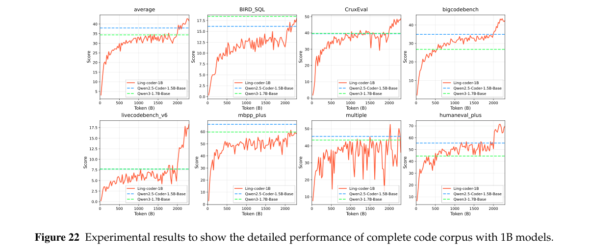
合成数据。此外，我们纳入一小部分但多样化的合成数据。种子来源包括编程平台、库参考文档和编程概念。通过组合增强，覆盖更广泛的编程概念与主题。
评估 Ling Code Corpus。我们设计轻量级验证策略，即从零训练小型编程模型（例如1B规模），衡量代码数据的性能。实验表明，在单一类型代码数据上从零训练，可可靠代理完整规模性能：所得基础模型表现出强任务能力，并与更大规模模型具有一致的行为相关性。这一发现使得在扩展至数百亿或数千亿参数之前，能够高效地早期验证架构与训练配方。图22展示我们的1B模型（Ling-coder-1B）与 Qwen2.5-Coder-1.5B-Base（Hui et al., 2024）、Qwen3-1.7B-Base（Yang et al., 2025a）的比较结果。结果令人鼓舞：在主流基准上，我们与 Qwen2.5-Coder-1.5B-Base 相当甚至更好。这仅通过从零消耗2T token 代码数据，再进行300B token 退火阶段实现。
语言模型的数学能力依赖高质量、多样化语料。为训练不同规模的 Ling 2.0 模型，我们汇集了超过1.8T token 的数学语料，来自网页、教科书、研究论文、代码仓库、题库与合成来源。我们设计包含解析、召回、过滤、重写与合成的多阶段处理流水线来整理语料。经过精心平衡，精炼数据构成模型最终预训练混合。
通用数学数据。构建 Ling Math Corpus 之前，我们迭代改进 PDF 与 HTML 解析器，确保数学内容完整。随后，开发多阶段流水线，从网页（例如 Common Crawl）、书籍、论文与源代码等不同来源召回高度相关的数学数据。首先，迭代构建具有高召回率的 fastText 分类器，在小得多的候选池内定位数学数据。接下来，通过微调小型语言模型，开发（接下页）
（接上页）
具有4B参数的 LLM-Filter 与 LLM-Refiner，过滤并精炼包含数学知识或逐步解题过程的数据。将召回流水线应用于不同数据来源，结合去重技术（例如MD5、MinHash）后，我们收集了由网页、书籍、论文等构成的大量数学数据。
合成数学数据。此外，我们采用合成数据生成，创建难度各异、包含逐步推理过程的多样化数学问答对。这在来自多个可靠来源的高质量召回语料上进行。同时，我们积极从网页与书籍语料提取现有问答对。此外，使用包含数千节点与数百万边的大规模数学概念图（Chen et al., 2025），从零合成全新数学问题。这显著扩展模型知识边界。作为补充，我们还开发精细的问题生成器，旨在向模型提出更高质量、更真实的数学问题。
评估 Ling Math Corpus。为实证验证数学语料有效性，我们以第B.1.1节介绍的预训练 Ling-coder-1B 为基础，仅使用数学语料，通过先持续训练后退火的策略训练超过1.8T token，最后300B用于退火训练。受篇幅限制，我们只展示基准平均性能结果。如图4b所示，所得 Ling-math-1B 在主流数学基准（例如 GSM8K（Cobbe et al., 2021）、MATH（Hendrycks et al., 2021b）、CollegeMath（Tang et al., 2024）、OlympiadBench（He et al., 2024a）、CMATH（Wei et al., 2023）、MathBench（Liu et al., 2024）等）上，优于强劲的 Qwen2.5-Math-1.5B-Base（Yang et al., 2024b）与 Qwen3-1.7B-Base（Yang et al., 2025a）。这一结果证实整合语料的高质量。
此外，我们开展专项比较分析，评估整理后的数学网页数据的贡献。使用相同1B模型训练范式，将自有网页数据与广受认可的开源数据集比较，即 Infi-mm-math（Han et al., 2024）、finemath-3plus（Allal et al., 2025）、megamath（Zhou et al., 2025）和 nemotron-cc（Mahabadi et al., 2025）。使用我们的网页数据训练的 Ling-math-web-1B 显著更优，如图24所示。这通过实证验证了专门的网页数据获取与精炼流水线的有效性，而该流水线是预训练数据整体实力的关键因素。
2TB多语言数据主要来自 CulturaX（Nguyen et al., 2024）和 WanJuan（He et al., 2023）等开源网页数据集，我们也纳入若干经典平行语料（OPUS（Tiedemann, 2012）、MultiUN（Eisele and Chen, 2010）等），加强跨语言对齐。
语言分布方面，多语言语料覆盖约30种语言，涉及网页、代码、数学、Wikipedia、平行语料，以及少量合成翻译数据等不同领域。我们首先专门纳入18种语言的数据，其中包括：
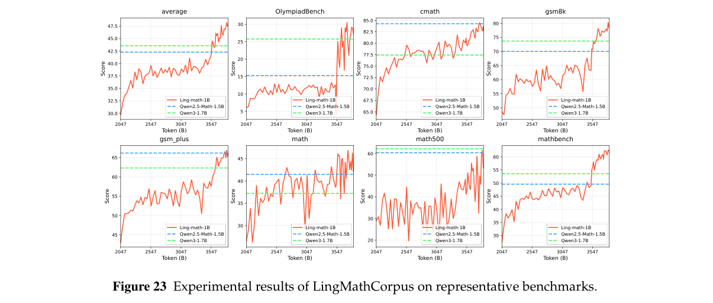
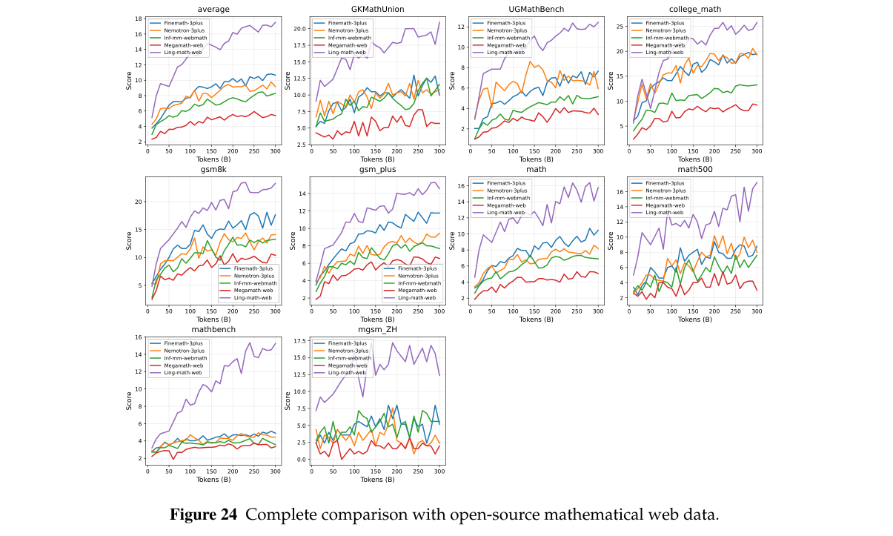
此外，也使用包含日语、阿拉伯语、印地语、土耳其语、芬兰语等其他语言混合内容的语料。
多语言数据占预训练语料的4%。各语族比例约为：罗曼语族50%、日耳曼语族10%、斯拉夫语族（接下页）
（接上页）
3%，其余为其他语言。实验发现，该分布在保持中英文性能的同时，显著改善小语种表现。罗曼语族和日耳曼语族数据对中英文基准的负面影响较小，而斯拉夫语族与其他语言中较低质量的数据，尤其是阿拉伯语或日语，可能产生相当大的负面影响。
训练大规模语言模型，对数据基础设施效率、扩展能力与治理提出重大挑战。为应对传统工作流协作低效、血缘不透明、迭代缓慢等痛点，我们基于两个核心原则构建下一代数据基础设施：Data-as-Code 与统一数据湖仓。
Data-as-Code：从手动操作到自动化 CI/CD。第一个原则是将整个数据处理流水线代码化，并在版本控制系统（例如 Git）中管理，实现自动化、可复现的工作流。这一方法与行业领先 ML 平台的设计原则一致，旨在将数据处理与模型训练工作流标准化、模块化，通过代码驱动编排进行管理（Baylor et al., 2017）。因此，我们开发统一库，更好地管理 AI 数据算子（AIDataOps），集中跨多模态的50多个数据处理算子，并集成至自动化 CI/CD 系统。这一转变带来显著收益：首先，提供端到端透明、可复现的数据血缘，使任何数据点来源均清晰可追踪；其次，完全自动化新特性开发与回填，将迭代周期从数月缩短至数天，大幅提高研发敏捷性。
统一数据湖仓与宽表架构。第二个原则是实现统一湖仓架构，整合分散数据来源（Zaharia et al., 2021）。大规模预训练数据管理的最大挑战之一，是数据分散在数百个独立数据集中，造成严重孤岛与低效实验。为此，我们面向网页、代码等主要领域，设计并实现统一逻辑宽表。这一架构作为全部原始、已处理与可训练数据的中心枢纽，不仅通过统一视图简化数据发现与分析，还具备弹性扩展能力，可添加新特性而无需重建全表。系统针对大规模训练深度优化，实现每小时超过20TB的高性能I/O，确保数据处理不再是瓶颈。
结合这两个原则，我们创建了强大、高效的数据引擎。该基础设施对 Ling 2.0 语料构建至关重要。例如，它使我们能够为所有网页数据构建含万亿条记录的宽表，并在两天内处理300亿条可训练数据。系统不仅加速当前模型开发，也为未来更复杂的数据探索奠定坚实基础。